データサイエンス実践 Ch9 画像認識
資料
画像認識
画像や音声から, そこに写っているものや話された言葉を当てる技術を認識といいます. 第8章で仕組みを説明したニューラルネットワークを, ここからは実際に動かして認識を行います. 手書き数字の認識を scikit-learn で試した後, 画像認識で広く使われる畳み込みニューラルネットワークの仕組みを説明し, 顔の画像から年代を当てるモデルを PyTorch で学習させます. 最後に, 音声の認識が画像の認識と同じ考え方でできることを説明します.
認識技術の活用事例
認識の技術は, 身近なところで多く使われています.
| 分野 | 認識するもの | 入力 |
|---|---|---|
| 郵便 | はがきや封筒に手書きされた郵便番号 | 郵便物を撮影した画像 |
| 事務 | 書類, レシート, 名刺の文字 (OCR, 光学文字認識) | 紙をスキャンした画像 |
| 本人確認 | 登録された本人の顔かどうか (顔認証) | カメラで撮影した顔の画像 |
| 音声アシスタント | 話しかけた言葉 (音声認識) | マイクで録音した音 |
| 医療 | X 線や CT の画像に写った病変の候補 | 医療用の画像 |
| 自動車 | 歩行者, 他の車, 道路標識 | 車載カメラの画像 |
どの事例も, 画像や音という数値の集まりを入力にして, 「どの数字か」「本人か他人か」「どの言葉か」のように, あらかじめ決まった選択肢 (クラス) のどれにあたるかを答えています. 形のうえでは第6章の分類と同じ問題です. ただし入力は, 列ごとに意味の決まった表のデータではなく, 大量の画素の値や音の振幅の並びです.
パターン認識: 特徴抽出と識別
画像や音声のようなデータを, 決まったクラスのどれかに振り分けることをパターン認識といいます. パターン認識は, 次の 2 つの段階に分けて考えます.
- 特徴抽出: 入力から, クラスを見分けるのに役立つ値 (特徴) を取り出す.
- 識別: 取り出した特徴から, どのクラスにあたるかを決める. 第6章の決定木のような分類器が担う.
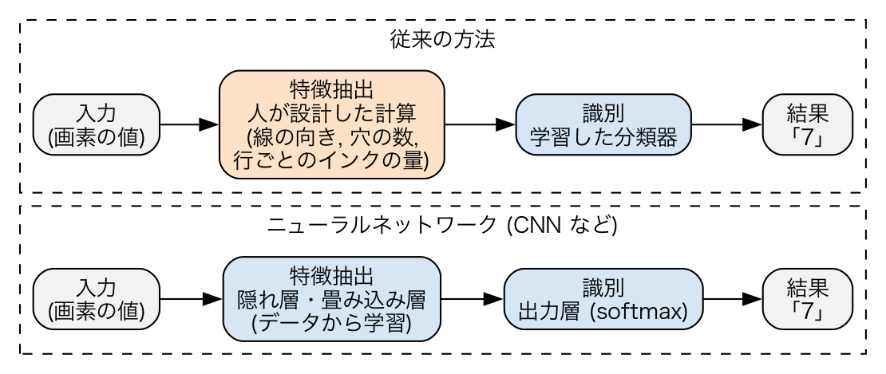
特徴抽出が要るのは, 画素の値そのものがクラスとの対応を直接表していないからです. 同じ「7」でも, 書く位置が 1 画素ずれるだけで, すべての画素の値が変わります. 一方で「線で囲まれた穴がいくつあるか」は, 位置がずれても変わりません. 穴は「0」「6」「9」に 1 つ, 「8」に 2 つあり, 「1」「7」にはありません. このように, 書き方の違いでは変わりにくく, クラスによって違う値が, 識別に役立つ特徴です.
従来のパターン認識では, 図の上段のように, 何を特徴にするかを人が考えて設計しました. 穴の数, 線の向き, 行ごとのインクの量などです. 識別の部分は学習で決めますが, 認識の性能は, 人が設計した特徴の良し悪しで大きく左右されました.
ニューラルネットワークでは, 図の下段のように, 特徴抽出の部分も学習で決めます. 隠れ層の重みは, 識別に役立つ特徴を取り出すように, 訓練データから決まります. 画像向けの畳み込みニューラルネットワーク (CNN) では, 畳み込み層のフィルタがこの役割を担います. 畳み込みニューラルネットワークで説明する縦のエッジを取り出すフィルタは, 人が設計した特徴抽出の一例です. CNN はこのフィルタの値を人が決めずに, 学習で決めます.
手書き数字の認識
パターン認識の流れを, 手書き数字の画像で試します. 第8章で例に使った手書き数字の認識を, scikit-learn のニューラルネットワークで実際に行います.
この節では次のライブラリを使います. uv add しておいてください.
uv add numpy matplotlib matplotlib-fontja scikit-learn数字の画像データ
scikit-learn には, 手書きの数字 0 から 9 の画像 1797 枚が付属しています. 各画像は縦 8 画素, 横 8 画素で, 各画素の値はインクの濃さを 0 (白) から 16 (黒) で表します. load_digits で読み込めるので, ダウンロードは要りません.
import numpy as np
import matplotlib.pyplot as plt
import matplotlib_fontja
from sklearn.datasets import load_digits
digits = load_digits()
print(digits.images.shape) # (枚数, 縦, 横)
print(digits.images[0]) # 1 枚目の画像の画素の値
print(digits.target[:10]) # 最初の 10 枚の正解
"""
(1797, 8, 8)
[[ 0. 0. 5. 13. 9. 1. 0. 0.]
[ 0. 0. 13. 15. 10. 15. 5. 0.]
[ 0. 3. 15. 2. 0. 11. 8. 0.]
[ 0. 4. 12. 0. 0. 8. 8. 0.]
[ 0. 5. 8. 0. 0. 9. 8. 0.]
[ 0. 4. 11. 0. 1. 12. 7. 0.]
[ 0. 2. 14. 5. 10. 12. 0. 0.]
[ 0. 0. 6. 13. 10. 0. 0. 0.]]
[0 1 2 3 4 5 6 7 8 9]
"""1 枚目の画像は, 8 行 8 列の数値の表です. 値の大きい画素が輪のように並んでいて, 「0」の形が読み取れます. 画像として描くと, 次のようになります.
fig, axes = plt.subplots(2, 5, figsize=(8, 3.6))
for i, ax in enumerate(axes.flat):
ax.imshow(digits.images[i], cmap='gray_r') # 値が大きいほど黒く描く
ax.set_title(f'正解: {digits.target[i]}')
ax.axis('off')
plt.show()
plt.close()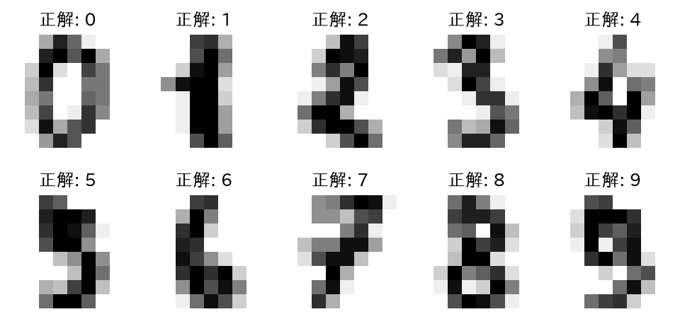
8 × 8 画素と粗い画像ですが, どの数字かは人の目で見分けられます. この 64 個の画素の値から数字を当てるのが, 手書き数字の認識です.
ニューラルネットワークによる識別
scikit-learn の MLPClassifier は, 第8章で説明した, 全結合層を重ねたニューラルネットワーク (多層パーセプトロン, MLP) の分類器です. 入力層に 64 個の画素の値を並べ, 隠れ層で特徴を取り出し, 出力層の softmax 関数で 0 から 9 のそれぞれである確率を出します. 隠れ層の活性化関数は ReLU で, 重みは交差エントロピー損失を小さくするように誤差逆伝播法で学習します (第8章).
全結合層には数値を 1 列に並べて入力するので, 8 × 8 の画像を 64 個の値の並びとして扱います. digits.data は, 各画像をこの形に並べ直したものです. 画素の値は 16 で割って 0 から 1 の範囲にそろえます. 入力の値の範囲が大きいと, 学習が不安定になりやすいからです.
第6章と同じく, データを訓練データとテストデータに分け, 訓練データだけで学習します.
from sklearn.model_selection import train_test_split
from sklearn.neural_network import MLPClassifier
X = digits.data / 16 # 64 個の画素の値を 0 から 1 の範囲にする
y = digits.target
# 7割を訓練データ, 3割をテストデータにする (数字ごとの割合を両方で揃える)
X_train, X_test, y_train, y_test = train_test_split(
X, y, test_size=0.3, random_state=0, stratify=y)
print(X_train.shape, X_test.shape)
# 隠れ層にニューロンを 64 個置いたニューラルネットワーク
mlp = MLPClassifier(hidden_layer_sizes=(64,), max_iter=1000, random_state=0)
mlp.fit(X_train, y_train)
pred = mlp.predict(X_test)
print((pred == y_test).mean()) # 正解率
"""
(1257, 64) (540, 64)
0.9777777777777777
"""hidden_layer_sizes=(64,) は, 隠れ層を 1 層にしてニューロンを 64 個置くという指定です. max_iter は学習の繰り返しの上限, random_state は重みの初期値を決める乱数の固定です. 訓練データ 1257 枚で学習したモデルは, テストデータ 540 枚のうち 97.8% の数字を正しく認識しました.
混同行列と誤認識した画像
第6章の混同行列で, どの数字をどの数字と間違えたかを確かめます. 行が正解, 列が予測で, 10 クラスなので 10 × 10 の表になります.
from sklearn.metrics import confusion_matrix, ConfusionMatrixDisplay
cm = confusion_matrix(y_test, pred)
print(cm)
"""
[[54 0 0 0 0 0 0 0 0 0]
[ 0 54 0 0 0 0 0 0 1 0]
[ 0 1 52 0 0 0 0 0 0 0]
[ 0 0 0 54 0 1 0 0 0 0]
[ 0 1 0 0 52 0 0 0 1 0]
[ 0 0 0 0 0 55 0 0 0 0]
[ 0 1 0 0 0 0 53 0 0 0]
[ 0 0 0 0 0 0 0 53 0 1]
[ 0 2 0 0 0 1 0 0 49 0]
[ 0 0 0 1 0 1 0 0 0 52]]
"""
ConfusionMatrixDisplay(cm).plot(cmap='Blues', colorbar=False)
plt.xlabel('予測')
plt.ylabel('正解')
plt.show()
plt.close()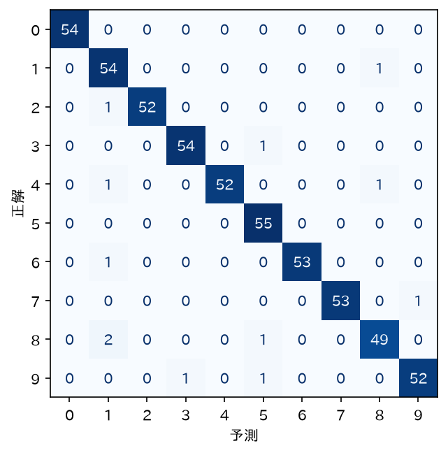
誤りは全部で 12 枚です. 列の方向に見ると, 「1」の列に誤りが 5 枚 (正解が 2, 4, 6 の各 1 枚と, 8 の 2 枚) 集まっていて, 「1」と答える誤りが最も多いと分かります. 「8」と「1」は, 正解 8 を 1 と答えた 2 枚と, 正解 1 を 8 と答えた 1 枚があり, 両方向に間違えています. 実際に誤認識した画像を表示して, 間違えた理由を探ります.
wrong = np.where(pred != y_test)[0] # 誤認識したテストデータの番号
print(len(wrong))
"""
12
"""
fig, axes = plt.subplots(2, 6, figsize=(9, 4.2))
for ax in axes.flat:
ax.axis('off')
for ax, i in zip(axes.flat, wrong):
ax.imshow(X_test[i].reshape(8, 8), cmap='gray_r')
ax.set_title(f'正解 {y_test[i]}\n予測 {pred[i]}')
plt.show()
plt.close()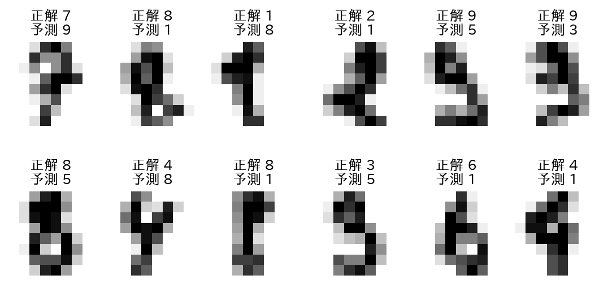
X_test[i].reshape(8, 8) は, 64 個の値の並びを 8 × 8 の表に戻しています. 誤認識した画像には, 人が見ても迷う形が多く含まれます. 「1」と答えた「8」のうち 1 枚 (下段の左から 3 枚目) は, 輪がつぶれて縦の太い線に近くなっています. 「9」を「5」や「3」と答えた画像は, 上の輪がはっきり閉じておらず, 「5」や「3」に近い形です. 形の似た数字の組 (8 と 1, 3 と 5 と 9) で誤りが起きやすいという傾向は, 第8章の混同行列の例で見た「4」と「9」の取り違えと同じ種類の弱点です. 8 × 8 画素では細かい形が失われるので, 解像度の高い画像を使えば減らせる誤りもあります.
人が設計した特徴との比較
MLP には画素の値をそのまま入力し, 特徴は隠れ層が学習で取り出しました. パターン認識: 特徴抽出と識別の図の上段のように, 人が設計した特徴を使うとどうなるかを比べます. 特徴として, 各行のインクの量 (その行の画素の値の合計) 8 個と, 各列のインクの量 8 個の, 合わせて 16 個の値を使います. 「1」なら中央の列にインクが集まり, 「0」なら左右の列に分かれる, という違いを捉える特徴です.
images = digits.images / 16
# 各行のインクの量 (8 個) と各列のインクの量 (8 個) を特徴にする
features = np.hstack([images.sum(axis=2), images.sum(axis=1)])
print(features.shape)
F_train, F_test, y_train, y_test = train_test_split(
features, y, test_size=0.3, random_state=0, stratify=y)
mlp_f = MLPClassifier(hidden_layer_sizes=(64,), max_iter=2000, random_state=0)
mlp_f.fit(F_train, y_train)
print((mlp_f.predict(F_test) == y_test).mean())
"""
(1797, 16)
0.9351851851851852
"""分け方と分類器は同じにして, 入力だけを 16 個の特徴に替えました. 正解率は 0.935 で, 画素の値をそのまま入力した 0.978 より下がります. 行と列の合計に畳むと, どの行のどの位置にインクがあるかという組み合わせの情報が失われるからです. 人が設計した特徴は, 設計者が気付いた違いしか捉えられません. 画素の値をそのまま入力して特徴を学習させる方が, この例では良い結果になりました.
文字認識
文字の認識も, 数字の認識と同じ流れで行えます. 違いは, クラスの数と, 入力の画像の作り方です.
クラスの数は, 数字なら 10, アルファベットなら大文字と小文字で 52 です. 日本語では, ひらがな, カタカナに加えて漢字が数千種類あるので, 数千クラスの分類になります. クラスが増えるほど, 形の似た文字の組 (「力」と「カ」, 「口」と「ロ」, 「未」と「末」) も増えます. 手書き数字の「8」と「1」の取り違えと同じ種類の誤りが, 数千のクラスの間で起こりえます.
実際の文書の OCR では, 1 文字ずつの画像が最初から用意されているわけではありません. 文書の画像から文字の並んだ行の位置を見つけ, 行を 1 文字ずつに切り出すか, 行の画像全体を文字の並びとして読み取ります. 読み取った文字の並びを, 単語や文として自然かどうかで補正することもあります. 「未来」と「末来」のように形の似た候補があるとき, 単語として存在する「未来」を選ぶ, という補正です.
畳み込みニューラルネットワーク
手書き数字の認識では, 画像を 64 個の値の並びにして全結合層に入力しました. 画像認識や音声認識のニューラルネットワークでは, 全結合層だけでなく, 画像の形を活かす畳み込みニューラルネットワーク (Convolutional Neural Network, CNN) が広く使われています.
第8章で説明した基本的なニューラルネットワークは, 入力層, 全結合層と ReLU などの活性化関数による隠れ層, softmax 関数などによる出力層から構成されていました.

全結合層 (Affine Layer) では, 入力のすべてのニューロンが次の層のすべてのニューロンと結合します. そのため, 入力はすべて 1 列のベクトルに並べ直します. しかし画像データは, 縦, 横, チャンネル (RGB なら 3 チャンネル) の 3 次元の構造を持ちます. 例えば, 28 × 28 画素のグレースケール画像 (1 チャンネル) は, 28 \times 28 \times 1 という構造です.
画像を 1 列に並べ直すと, どの画素とどの画素が隣り合っているかという空間的な構造の情報が使われなくなります. 手書き数字の MLP にとって, 左上の画素と右隣の画素は, 左上の画素と右下の画素と同じく「64 個のうちの 2 つ」にすぎません. そのため, 近くの画素がつくる線や角のような局所的な特徴を捉えにくくなります.
そこで CNN では, 畳み込み層 (Convolution Layer) とプーリング層 (Pooling Layer) を加えて, データの空間的な構造を取り込みます.
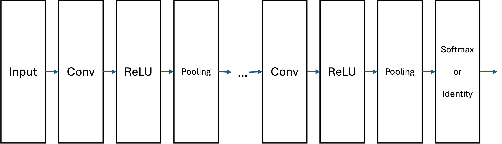
畳み込み層 (Convolution Layer)
畳み込み層は, 入力データ I にフィルタ (カーネル) K を適用して, 特徴マップ F を生成します. 畳み込みの演算は次の式で表されます.
F(x, y) = \sum_{i=1}^{m} \sum_{j=1}^{n} I(x+i, y+j) \cdot K(i, j)
I(x, y): 入力画像の画素の値 (例: グレースケール画像なら 0 から 255 の値), K(i, j): フィルタ (カーネル) の要素, m \times n: フィルタの大きさ (例: 3 \times 3).
フィルタを画像の上で少しずつずらしながら適用することで, 画像の中の特徴 (エッジや模様など) を取り出します.
例として, 4 \times 4 のグレースケール画像を考えます. 各要素は 0 から 255 の画素の値を持ちます.
入力画像 I:
I = \begin{bmatrix} 1 & 2 & 3 & 0 \\ 0 & 1 & 2 & 3 \\ 1 & 0 & 1 & 2 \\ 2 & 1 & 0 & 1 \end{bmatrix}
フィルタ K:
K = \begin{bmatrix} 1 & 0 & -1 \\ 1 & 0 & -1 \\ 1 & 0 & -1 \end{bmatrix}
このフィルタは, 垂直方向のエッジ (輪郭) を検出するカーネルとしてよく使われます.
畳み込み演算の手順
畳み込み演算では, フィルタ K を入力画像 I に適用し, 次の手順を繰り返します.
- フィルタ K を入力画像 I の一部 (局所領域) に重ねます.
- 重なった要素同士を掛け算し, その結果を合計します.
- 合計値を特徴マップ F の対応する位置に記録します.
- フィルタをストライド (移動量) の分だけずらし, 同じ計算を繰り返します.
ストライドは 1 (1 画素ずつ移動) とします. 入力画像が 4 \times 4, フィルタの大きさが 3 \times 3, ストライドが 1 の場合, 出力の特徴マップの大きさは次の式で計算されます.
F_{\text{Size}} = \left( I_{\text{Size}} - K_{\text{Size}} \right) / \text{Stride} + 1
F_{\text{Size}} = (4 - 3) / 1 + 1 = 2
したがって, 出力の特徴マップ F の大きさは 2 \times 2 になります.
ステップ 1: フィルタを左上に重ねる
入力画像の左上の 3 \times 3 の領域:
\begin{bmatrix} 1 & 2 & 3 \\ 0 & 1 & 2 \\ 1 & 0 & 1 \end{bmatrix}
フィルタ K を適用します.
F(1, 1) = \begin{bmatrix} 1 & 2 & 3 \\ 0 & 1 & 2 \\ 1 & 0 & 1 \\ \end{bmatrix} \cdot \begin{bmatrix} 1 & 0 & -1 \\ 1 & 0 & -1 \\ 1 & 0 & -1 \end{bmatrix} \\ = (1 \cdot 1) + (0 \cdot 2) + (-1 \cdot 3) + (1 \cdot 0) + (0 \cdot 1) + (-1 \cdot 2) + (1 \cdot 1) + (0 \cdot 0) + (-1 \cdot 1) \\ = 1 + 0 - 3 + 0 + 0 - 2 + 1 + 0 - 1 = -4
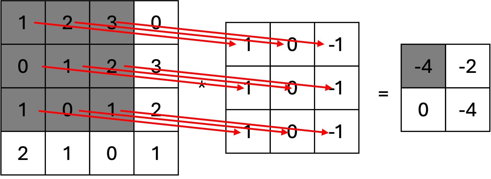
ステップ 2: フィルタを右に 1 つ移動する
入力画像の次の領域:
\begin{bmatrix} 2 & 3 & 0 \\ 1 & 2 & 3 \\ 0 & 1 & 2 \end{bmatrix}
フィルタ K を適用します.
F(1, 2) = \begin{bmatrix} 2 & 3 & 0 \\ 1 & 2 & 3 \\ 0 & 1 & 2 \\ \end{bmatrix} \cdot \begin{bmatrix} 1 & 0 & -1 \\ 1 & 0 & -1 \\ 1 & 0 & -1 \end{bmatrix} = -2
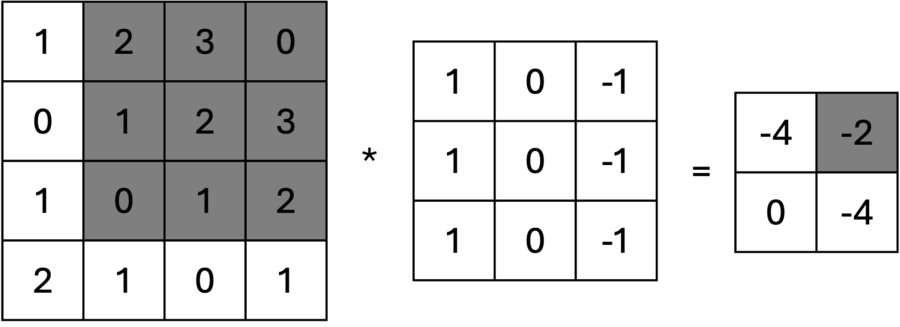
ステップ 3: フィルタを左下に移動する
入力画像の次の領域:
\begin{bmatrix} 0 & 1 & 2 \\ 1 & 0 & 1 \\ 2 & 1 & 0 \end{bmatrix}
フィルタ K を適用します.
F(2, 1) = \begin{bmatrix} 0 & 1 & 2 \\ 1 & 0 & 1 \\ 2 & 1 & 0 \\ \end{bmatrix} \cdot \begin{bmatrix} 1 & 0 & -1 \\ 1 & 0 & -1 \\ 1 & 0 & -1 \end{bmatrix} = 0
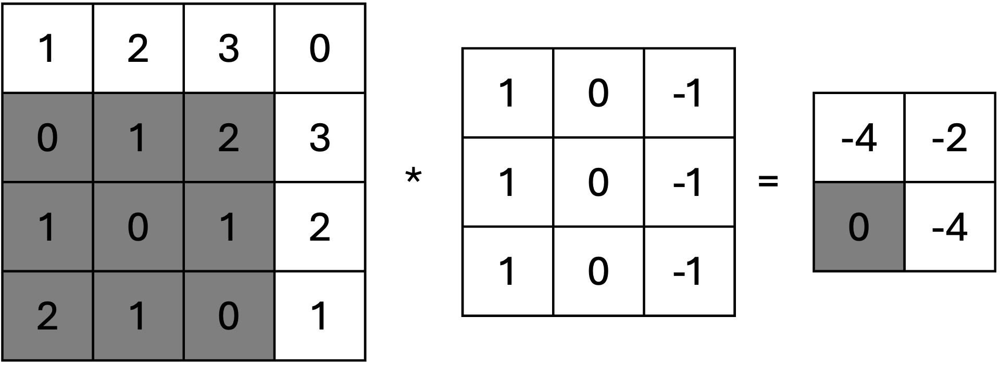
ステップ 4: フィルタを右下に移動する
入力画像の次の領域:
\begin{bmatrix} 1 & 2 & 3 \\ 0 & 1 & 2 \\ 1 & 0 & 1 \end{bmatrix}
同様に計算します.
F(2, 2) = \begin{bmatrix} 1 & 2 & 3 \\ 0 & 1 & 2 \\ 1 & 0 & 1 \end{bmatrix} \cdot \begin{bmatrix} 1 & 0 & -1 \\ 1 & 0 & -1 \\ 1 & 0 & -1 \end{bmatrix} = -4
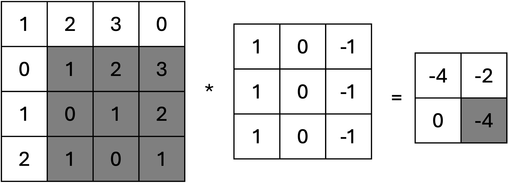
特徴マップの結果
畳み込み演算の結果として得られる特徴マップ F は次のとおりです.
F = \begin{bmatrix} -4 & -2 \\ 0 & -4 \end{bmatrix}
この例の画像にカーネルを適用すると次のようになります.
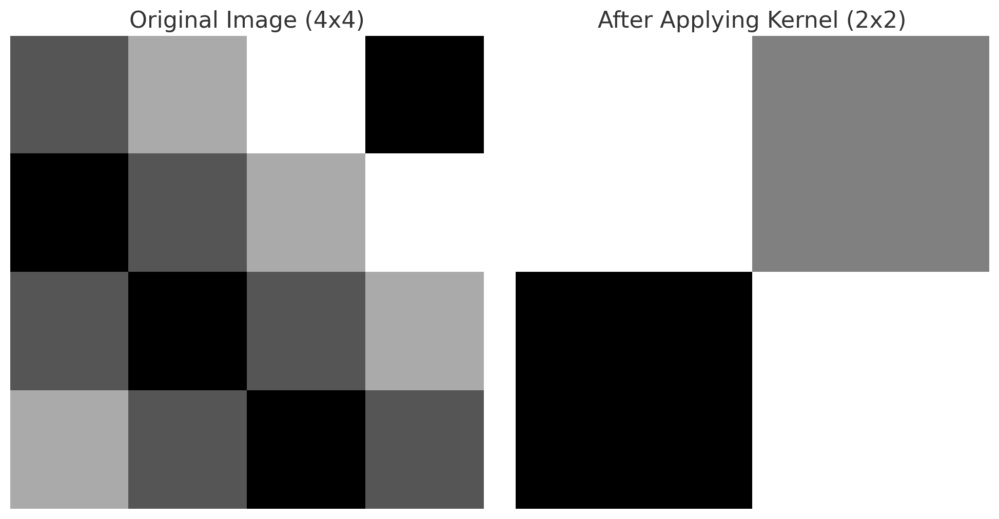
4 × 4 の画像では単純すぎて効果が分かりにくいので, 我が家の犬の画像をグレースケールにしたものに, 同じカーネルを適用したのが次の画像です. 物体の垂直方向のエッジ (輪郭) だけが強調されています.
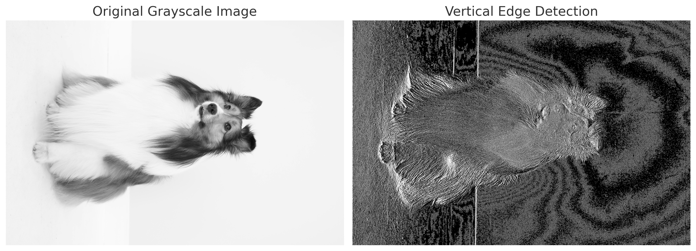
ほかの代表的なカーネルには, 次のようなものがあります.
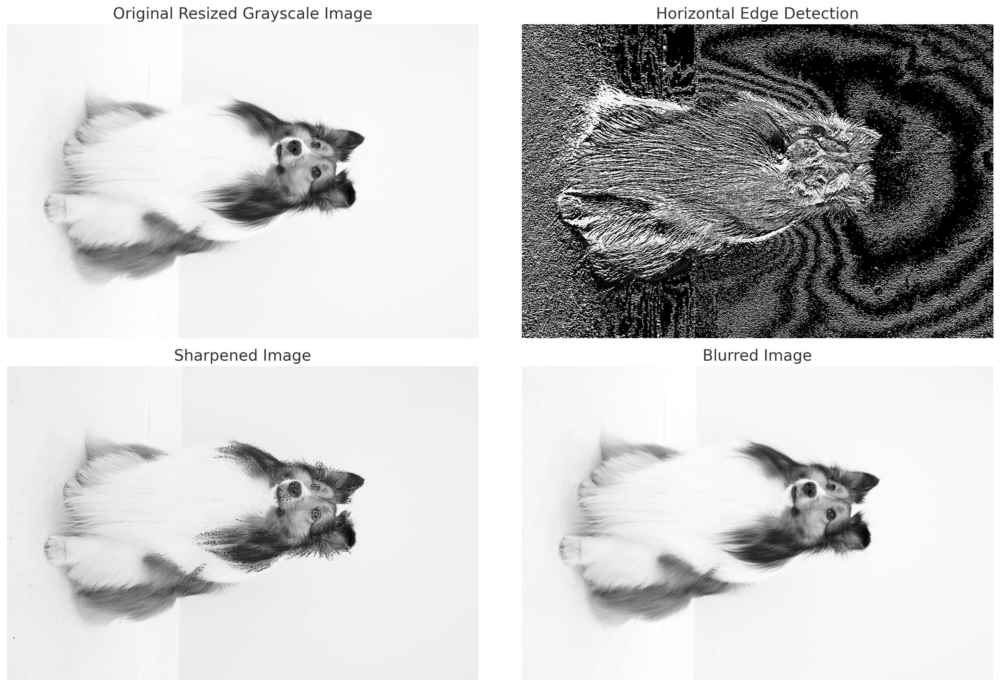
水平エッジ検出カーネル (Horizontal Edge Detection Kernel)
K_{\text{horizontal}} = \begin{bmatrix} 1 & 1 & 1 \\ 0 & 0 & 0 \\ -1 & -1 & -1 \end{bmatrix}
このカーネルは, 画像の中の水平方向のエッジを検出します. 上部の値 (+1) と下部の値 (-1) の符号が逆なので, 上下で明るさの違う境界で大きな値になります. 地平線や階段の段差のような水平の線を取り出すのに向いています.
シャープ化カーネル (Sharpen Kernel)
K_{\text{sharpen}} = \begin{bmatrix} 0 & -1 & 0 \\ -1 & 5 & -1 \\ 0 & -1 & 0 \end{bmatrix}
中央の値 (5) が大きく, 周囲の値 (-1) が小さいので, 注目する画素と周囲の画素との明るさの差が強調されます. その結果, 画像のエッジや細部が際立ちます. エッジを目立たせたい場合や, ぼやけた画像を鮮明にする場合に使います.
ぼかし (ブラー) カーネル (Blur Kernel)
K_{\text{blur}} = \frac{1}{9} \begin{bmatrix} 1 & 1 & 1 \\ 1 & 1 & 1 \\ 1 & 1 & 1 \end{bmatrix}
このカーネルは, 隣接する画素の平均値を計算して, 画像全体を滑らかにします. 画素間の明るさの差が緩やかになるので, ノイズの低減に役立ちます. 背景の処理やノイズの軽減に使います.
このように, フィルタの形や値によって, 異なる特徴 (エッジ, 模様など) を捉えられます. 畳み込みフィルタの各セルの値は, これまでのニューラルネットワークの重み W と同じ働きをし, CNN ではその値が学習の対象になります.
プーリング層 (Pooling Layer)
プーリング層は, 特徴マップを縮小して計算量を減らすとともに, 特徴の位置が少しずれても結果が変わりにくくする役割を持ちます. 例えば, 最大プーリング (Max Pooling) は次の式で表されます.
P(x, y) = \max_{i=1}^{m} \max_{j=1}^{n} F(x+i, y+j)
F(x, y): 入力の特徴マップ, P(x, y): プーリング後の特徴マップ, m \times n: プーリングのウィンドウの大きさ (例: 2 \times 2).
最大プーリングは, 各ウィンドウ内の最大値を取り出して, 特徴が最も強く表れた部分を残します. 画像中のエッジや明るい部分を強調するのに向いています.
例として, 4 \times 4 の行列に, 2 \times 2 のウィンドウで最大プーリングを適用します.
入力の行列:
I = \begin{bmatrix} 1 & 3 & 2 & 1 \\ 4 & 6 & 5 & 0 \\ 7 & 8 & 9 & 2 \\ 3 & 4 & 1 & 6 \end{bmatrix}
各 2 \times 2 のウィンドウ内の最大値を取り, 縮小された行列を作ります.
\begin{bmatrix} 1 & 3 \\ 4 & 6 \end{bmatrix} \quad \text{最大値: } 6
\begin{bmatrix} 2 & 1 \\ 5 & 0 \end{bmatrix} \quad \text{最大値: } 5
\begin{bmatrix} 7 & 8 \\ 3 & 4 \end{bmatrix} \quad \text{最大値: } 8
\begin{bmatrix} 9 & 2 \\ 1 & 6 \end{bmatrix} \quad \text{最大値: } 9
出力の行列:
P_{\text{max}} = \begin{bmatrix} 6 & 5 \\ 8 & 9 \end{bmatrix}
CNN の全体のデータの流れを式でまとめると, 次のようになります.
- 畳み込み層:
F^{(l)} = f(W^{(l)} * F^{(l-1)} + b^{(l)})
W^{(l)}: 畳み込みフィルタ (重み), F^{(l-1)}: 前の層の特徴マップ, b^{(l)}: バイアス, f: 活性化関数 (例: ReLU).
- プーリング層:
P^{(l)} = \text{Pooling}(F^{(l)})
- 全結合層:
Y = \text{Softmax}(WX + B)
W: 全結合層の重み行列, X: プーリング層の出力, B: バイアス.
CNN は, 畳み込み層で特徴を取り出し, プーリング層でデータの次元を縮小し, 全結合層で最終的な予測を行います. パターン認識: 特徴抽出と識別の 2 つの段階でいえば, 畳み込み層とプーリング層が特徴抽出に, 最後の全結合層が識別にあたります. 畳み込み層を何段も重ねると, 前の段で取り出したエッジを組み合わせて角や曲線を, さらにそれらを組み合わせて目や鼻のような部品を, というように, 段を追って複雑な特徴を取り出せるようになります.
代表的な CNN モデル
CNN を使った主な画像認識モデルの歴史は, 次のようにまとめられます.
| 年代 | モデル名 | 特徴・概要 | 主な貢献や革新点 |
|---|---|---|---|
| 1998 | LeNet | 手書き数字の認識に使われた初期の CNN. 主に MNIST データセットで使われた. | 畳み込み層とプーリング層を使った初期の画像認識モデル. |
| 2012 | AlexNet | 画像認識の競技会 ImageNet で CNN を使い, 上位 5 候補の誤り率を大幅に改善した. | ReLU 活性化関数の使用, GPU による学習の導入. |
| 2014 | VGGNet | 小さな 3 × 3 のフィルタを多層に積み重ねた構成. VGG16 と VGG19 が特に有名. | モデルの深さが精度に大きく寄与することを示した. |
| 2014 | GoogLeNet (Inception) | Inception モジュールを採用し, 計算効率と精度を両立した. | 異なる大きさの畳み込みフィルタを同時に適用する Inception モジュール. |
| 2015 | ResNet | 残差ブロックを使い, 100 層を超えるネットワークの学習を可能にした. ImageNet で優勝. | 層を飛ばす接続 (スキップ接続) で勾配消失を抑え, 152 層のネットワークを学習した. |
| 2016 | DenseNet | 各層がそれより前のすべての層から入力を受け取る密結合の構成. | パラメータの効率が良く, 勾配の流れが改善される. |
| 2017 | Xception | 通常の畳み込みの代わりに深さ方向の畳み込み (Depthwise Separable Convolution) を使う. | 計算コストの削減と精度の向上. |
| 2017 | MobileNet | 軽量で効率的な CNN の構成. モバイル機器向けに最適化されている. | 計算量を減らし, モバイル環境でのリアルタイムの推論を可能にした. |
| 2020 | Vision Transformer (ViT) | 画像をパッチに分割し, Transformer の構成で処理するモデル. | Transformer が画像認識でも有効であることを示した. |
| 2021 | Swin Transformer | 局所的な窓 (ウィンドウ) を使う階層的な Transformer による画像認識モデル. | Transformer の拡張性を改善し, 高い精度を達成した. |
| 2022 | ConvNeXt | Vision Transformer のアイデアを取り入れた, 畳み込みネットワークの発展版. | 畳み込みベースのモデルが再び最先端の性能を達成できることを示した. |
Vision Transformer は CNN ではありませんが, CNN と比べられる画像認識のモデルとして表に含めています. 仕組みは章末のVision Transformerで説明します.
ここでは, ConvNeXt を使った画像認識を実行します.
ConvNeXt は Meta (旧 Facebook) が発表したモデルで, Swin Transformer を参考にしつつ, ResNet (Residual Network) を基盤として作られた CNN です.
ConvNeXt では, 畳み込み層に Depthwise Convolution を使っています. これは, 畳み込みを入力画像のチャンネルごとに独立して計算する手法です. 通常の畳み込みでは, 入力画像の複数のチャンネルを同時に処理するので, 計算コストが大きくなります. 一方, Depthwise Convolution では, 1 つのチャンネルに 1 つのフィルタで畳み込みを行い, それを全チャンネル分繰り返した後に, 別の 1 × 1 の畳み込み (Pointwise Convolution と呼ぶことが多い) でチャンネル間の情報を組み合わせます. 計算コストを抑えながら性能を高めたことが, ConvNeXt の大きな特徴です.
プーリング層には, Adaptive Average Pooling (アダプティブ平均プーリング) を採用しています. 普通の平均プーリングでは, プーリングの領域の大きさを固定して画素を平均します. Adaptive Average Pooling では, 最終的に出力したい大きさを指定します. すると, 入力画像の大きさに合わせて区切り方が自動で調整され, 均等に平均がとられます. そのため, 入力画像の解像度が変わっても, ネットワークの最終的な出力ベクトルの大きさを一定に保てます.
また, 活性化関数として, ReLU の発展形である GELU (Gaussian Error Linear Unit) を採用しています.
\mathrm{GELU}(x) = \frac{x}{2} \left[ 1 + \mathrm{erf}\left(\frac{x}{\sqrt{2}}\right) \right]
ここで \mathrm{erf}(x) は誤差関数 (error function) と呼ばれる関数です.
\mathrm{erf}(x) = \frac{2}{\sqrt{\pi}}\int_{0}^{x} e^{-t^2} dt
GELU は, 入力が小さい (特に 0 より負の側の) ときは出力を小さく抑え, 入力が大きくなるにつれて徐々に出力を増やしていく, なめらかな活性化関数です. ReLU と比べると, 入力が 0 の付近で緩やかに変化するので, 勾配が急に 0 になることがなく, 学習を安定させる効果が期待できます.
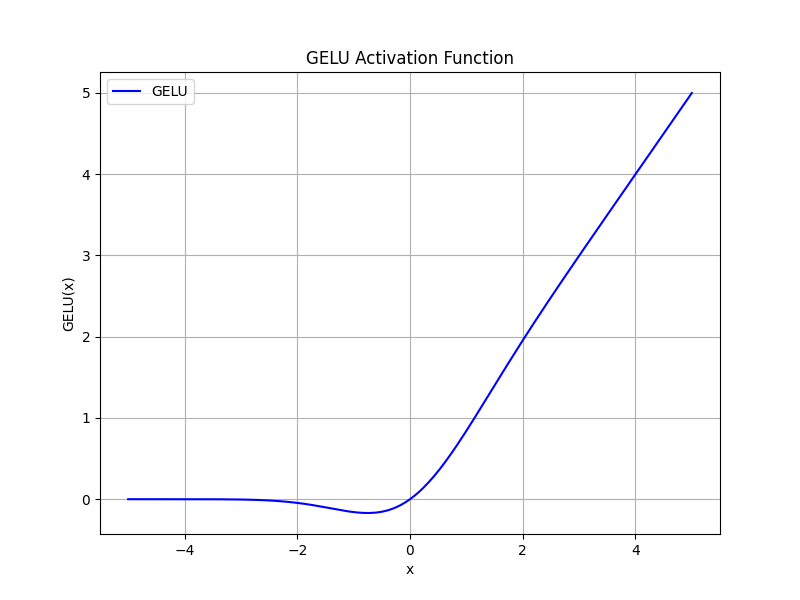
Python の CNN のライブラリはいくつかありますが, ConvNeXt は Meta が開発した PyTorch の上で実装されています.
顔による年齢識別
画像分類の事例として, 顔の画像から年代を当てるモデルを作ります. 10 代から 60 代までの 6 クラスへの分類です. データには, 顔の画像約 10 万枚に年齢, 性別, 人種のラベルを付けたデータセット FairFace (Kärkkäinen & Joo, 2021) を使います. 画像は写真共有サイト Flickr に公開された写真などから顔の部分を切り出したもので, データセットは CC BY 4.0 (出典を示せば再配布や改変ができるライセンス) で公開されています. 年齢は, 年齢そのものではなく 0-2, 3-9, 10-19, 20-29, 30-39, 40-49, 50-59, 60-69, more than 70 の 9 つの階級で付いています.
FairFace の GitHub のページを開き, Data の項にある次のリンクから, 画像とラベルをダウンロードしてください. いずれも Google ドライブのページが開くので, 右上のダウンロードのボタンを押します. 画像のファイルは約 550 MB あるので, 通信環境に注意してください. 画像のファイルでは, サイズが大きいので「このファイルのウイルス スキャンを実行できません」という確認の画面が出ます. 「このままダウンロード」を押してください.
Images (train + validation set)の[Padding=0.25]: 画像 (fairface-img-margin025-trainval.zip)LabelsのTrain: 訓練用の画像のラベル (fairface_label_train.csv)
Padding=0.25 は顔の周りの余白の少ない版で, 余白の多い Padding=1.25 の版もあります. Labels の Validation は検証用の画像のラベルですが, この資料では使いません.
プログラムを置くディレクトリの中に data ディレクトリを作り, fairface_label_train.csv を保存します. fairface-img-margin025-trainval.zip も data ディレクトリに移してから展開します. Windows ではファイルを右クリックして「すべて展開」を, macOS ではファイルをダブルクリックします. どちらの場合も fairface-img-margin025-trainval というフォルダができ, その中の train と val のフォルダに画像が入っています.
画像ファイルの形式
機械学習で使うラベル付きの画像データには, 画像と CSV などのラベルの表の組み合わせ, ラベル名のフォルダごとに分けた画像ファイル, MATLAB の .mat ファイルのように画像とラベルをまとめた形式など, いくつかの形式があります. いずれにも対応できるようにしておく必要がありますが, この資料では最も単純な, ラベル名を付けたフォルダに画像ファイルを保存する形式を扱います.
FairFace は, 画像とラベルの表を組み合わせた形式です. 画像のファイル名は 1.jpg, 2.jpg のような通し番号で, どの画像がどの年齢の階級かは, ラベルの表 fairface_label_train.csv に書かれています. ラベルの表に従って, 年代別に画像をフォルダに保存してみましょう.
> ls
face_image.py
data
> ls data
fairface-img-margin025-trainval
fairface_label_train.csvCSV ファイルのラベルの表
- 1 行が 1 枚の画像に対応し, 画像のファイル名 (パス) の列と, ラベルの列が並ぶ.
pandasのread_csvでDataFrameとして読み込む.fairface_label_train.csvの列は,file(画像のパス),age(年齢の階級),gender(性別),race(人種),service_test(データセットの作者の実験で使った画像かどうか).
まずは fairface_label_train.csv を読み込み, 中身を確認してみましょう.
次のライブラリが必要になるので, uv add しておいてください.
torch- CNN 用のライブラリ (PyTorch)
torchvision- PyTorch の画像, 動画処理用のライブラリ
pillow- 画像処理用のライブラリ
opencv-python- 画像処理用のライブラリ (Grad-CAM と Guided Backpropagationで使います.
importするときにはcv2と書きます)
- 画像処理用のライブラリ (Grad-CAM と Guided Backpropagationで使います.
pandas, matplotlib, seaborn, scikit-learn も使います. ファイル操作に使う shutil は Python の標準ライブラリなので, 追加は要りません.
import os
import pandas as pd
from PIL import Image #画像の表示/保存/書き込みなどを扱うライブラリ
#画像データの保存先
image_dir = 'data/fairface-img-margin025-trainval'
# ラベルの表 (CSV ファイル) の読み込み
labels = pd.read_csv('data/fairface_label_train.csv')
# 先頭の5行を表示する
print(labels.head())
"""
file age gender race service_test
0 train/1.jpg 50-59 Male East Asian True
1 train/2.jpg 30-39 Female Indian False
2 train/3.jpg 3-9 Female Black False
3 train/4.jpg 20-29 Female Indian True
4 train/5.jpg 20-29 Female Indian True
"""
# 行数と列数を表示する
print(labels.shape)
# >>> (86744, 5)
# 年齢の階級ごとの枚数を表示する
print(labels['age'].value_counts())
"""
age
20-29 25598
30-39 19250
40-49 10744
3-9 10408
10-19 9103
50-59 6228
60-69 2779
0-2 1792
more than 70 842
Name: count, dtype: int64
"""
# 画像データの取得と表示
## file列のパスを利用して画像をいくつか開いてみます.
for n in labels['file'][:3]:
img_path = os.path.join(image_dir, n) # パスを結合する
if os.path.exists(img_path):
img = Image.open(img_path) # 画像ファイルを開く
print(img_path, img.size) # パスと画像の大きさ (幅, 高さ) を表示
img.show() # 画像を表示
else:
print(f"Image file not found: {img_path}")
"""
data/fairface-img-margin025-trainval/train/1.jpg (224, 224)
data/fairface-img-margin025-trainval/train/2.jpg (224, 224)
data/fairface-img-margin025-trainval/train/3.jpg (224, 224)
>>> 画像が表示されます
"""訓練用の画像は 86,744 枚あり, 画像の大きさはすべて 224 × 224 画素にそろえられています. 階級ごとの枚数には偏りがあり, 最も多い 20 代 (20-29) は 25,598 枚, 60 代 (60-69) は 2,779 枚です.
それでは, fairface_label_train.csv をもとに, 年代別にフォルダを分けて画像を保存します. 使うのは 10-19 から 60-69 までの 6 つの階級で, 保存先のフォルダの名前は 10s, 20s, …, 60s とします. 10 歳未満 (0-2, 3-9) と 70 歳以上 (more than 70) の画像は使いません.
研究であれば画像の枚数は多いほど良いのですが, ここでは一通りの流れを体験することが目的なので, 学生の PC でも扱いやすいように各年代 200 枚だけコピーします. どの 200 枚を選ぶかは, DataFrame の sample で, 乱数の種 (random_state) を固定してランダムに決めます.
import os
import shutil
import pandas as pd
# 画像ディレクトリの設定
image_dir = 'data/fairface-img-margin025-trainval'
output_dir = 'data/sorted_images'
# ラベルの表の読み込み
labels = pd.read_csv('data/fairface_label_train.csv')
# 年齢の階級と保存先のフォルダ名の対応 (0-2, 3-9, more than 70 は使わない)
age_groups = {'10-19': '10s', '20-29': '20s', '30-39': '30s',
'40-49': '40s', '50-59': '50s', '60-69': '60s'}
# 年代別のフォルダに画像をコピー（各年代最大200枚）
for age, folder in age_groups.items():
# この階級の行だけを取り出し, ランダムに最大200行を選ぶ
rows = labels[labels['age'] == age]
rows = rows.sample(n=min(200, len(rows)), random_state=42)
folder_path = os.path.join(output_dir, folder)
os.makedirs(folder_path, exist_ok=True)
for file in rows['file']:
src_path = os.path.join(image_dir, file) # 例: data/fairface-img-margin025-trainval/train/123.jpg
dst_path = os.path.join(folder_path, os.path.basename(file)) # 例: data/sorted_images/10s/123.jpg
shutil.copy(src_path, dst_path)
print(folder, len(rows))
"""
10s 200
20s 200
30s 200
40s 200
50s 200
60s 200
"""file 列の値は train/123.jpg のように train フォルダからのパスになっています. os.path.basename はパスの最後のファイル名 (123.jpg) だけを取り出す関数で, 保存先ではフォルダを付けずにファイル名だけを使っています.
結果を確認してみます.
シェルのコマンドの | はパイプといい, | の左側のコマンドの標準出力を右側のコマンドに渡します. head -20 は, 受け取った出力の先頭 20 行だけを表示するコマンドです.
次の例では, ls data/sorted_images/10s で表示される結果の先頭 20 個だけを表示しています.
> ls data/sorted_images
10s 20s 30s 40s 50s 60s
> ls data/sorted_images/10s |head -20
10085.jpg
10370.jpg
10516.jpg
10599.jpg
1183.jpg
12699.jpg
13286.jpg
13594.jpg
13800.jpg
14253.jpg
14267.jpg
1553.jpg
15592.jpg
15838.jpg
15876.jpg
15916.jpg
15964.jpg
16005.jpg
16037.jpg
16535.jpgls はファイル名を文字の順に並べるので, 数値の大きさの順にはなりません. 各フォルダに画像が保存できていることが分かります.
手書き数字の認識と同じく, モデルの性能を評価するために, 学習に使う訓練データと, 学習の結果を確かめるテストデータに分けます. 続いて, 訓練用とテスト用でフォルダを分けます.
各年代 200 枚の画像のうち, 8 割 (160 枚) を訓練データ, 2 割 (40 枚) をテストデータにします.
データの分割には, 指定した割合でデータを分ける sklearn の train_test_split を使います. os.listdir が返すファイルの順序は OS によって異なるので, sorted でファイル名の順に並べてから分けます. 並べておかないと, 同じ random_state でも, PC によって分け方が変わります.
import os
import shutil
from sklearn.model_selection import train_test_split
data_dir = 'data/sorted_images'
output_dir = 'data/sorted_images_split'
# 画像ファイルのパスを収集し,年齢別に分類
age_groups = ['10s', '20s', '30s', '40s', '50s', '60s']
for age_group in age_groups:
images = sorted(os.listdir(os.path.join(data_dir, age_group))) # ファイル名の順に並べる
train_images, val_images = train_test_split(images
,test_size=0.2 #2割をテスト用データにする
, random_state=42)
train_dir = os.path.join(output_dir, 'train', age_group)
val_dir = os.path.join(output_dir, 'val', age_group)
os.makedirs(train_dir, exist_ok=True)
os.makedirs(val_dir, exist_ok=True)
for image in train_images:
shutil.copy(os.path.join(data_dir, age_group, image), os.path.join(train_dir, image))
for image in val_images:
shutil.copy(os.path.join(data_dir, age_group, image), os.path.join(val_dir, image))次のような形でデータが保存されていることを確認しましょう.
data/sorted_images_split
├── train
│ ├── 10s
│ ├── 20s
│ ├── 30s
│ ├── 40s
│ ├── 50s
│ └── 60s
└── val
├── 10s
├── 20s
├── 30s
├── 40s
├── 50s
└── 60sここで作ったフォルダの val はテストデータです. FairFace に含まれる val フォルダ (データセットの作者が分けた検証用の画像) とは別のものです.
画像認識の実施
CNN の学習のコードで扱う基本的な概念を説明します.
ハイパーパラメータ
機械学習では, 学習そのものはプログラムが自動で進めますが, 良い性能を得るには, 人がいくつかのパラメータを設定する必要があります. このように学習の前に人が決めるパラメータをハイパーパラメータといいます. 改善の手法も多いので, モデルがうまく学習できない場合は, 経験をもとにそれらを調整していきます.
この資料では細かな調整には踏み込まず, 基本的な処理とパラメータを説明します.
前処理とデータ拡張 (Data Augmentation)
学習の前に, 画像の大きさをそろえ, 内容と無関係な情報を減らして, 画像を統一した形式にそろえます. また, 反転などで画像を加工して訓練データの種類を増やします. このような加工で訓練データを増やすことをデータ拡張 (Data Augmentation) といいます.
- リサイズ (Resize)
画像の大きさをそろえます. ここでは 224 × 224 画素に統一します.
- 画像反転 (Horizontal Flip)
画像を左右に反転させて, データに多様性を加えます.
- 色調の変化 (Color Jitter)
画像の明るさ (
brightness) とコントラスト (contrast) をランダムに変えます.0.2は, 元の画像の 0.8 倍から 1.2 倍の範囲で変えることを表します.- テンソル (Tensor) 変換
数値の多次元配列を Tensor (テンソル) と呼びます. データをテンソルに変換すると, 効率的に学習を行えます. 例えば, 画像は, 高さ, 幅, チャンネル数 (RGB カラーなどの色) の 3 次元のテンソルとして表します.
- 正規化 (Normalize)
画像データを特定の範囲や分布に変換して, モデルが効率的に学習できるようにする手法を正規化といいます. 画像データは 0 から 255 の範囲の画素の値 (色や濃淡の数値) で表されますが, 値のばらつきが大きすぎると学習が不安定になります. そこで
ToTensorで 0 から 1 の範囲に変換し, さらにNormalizeで, 各チャンネルから平均を引いて標準偏差で割ります.
正規化に使っている平均 ([0.485, 0.456, 0.406]) と標準偏差 ([0.229, 0.224, 0.225]) は, ConvNeXt の学習に使われた大規模な画像データベース ImageNet の値です.
本来は使用するデータの平均と標準偏差を使います. ここでは事例の紹介なので, 便宜的に ImageNet の値を使っています.
試作のコードでは, すべて 0.5 にすることもよく行われていますが, 本来は使用するデータに合わせて変更すべき値です.
該当部分 (全体のインデントは省略)
# データ変換（前処理）
data_transforms = {
'train': transforms.Compose([
transforms.Resize((224, 224)), #画像のリサイズ
transforms.RandomHorizontalFlip(), #画像をランダムに反転
transforms.ColorJitter(brightness=0.2, contrast=0.2), # 色調変化
transforms.ToTensor(), #テンソル(多次元配列)に変換
transforms.Normalize(mean=[0.485, 0.456, 0.406]
,std=[0.229, 0.224, 0.225]), #正規化(本来は値を変更する必要あり.
]),
'val': transforms.Compose([
transforms.Resize((224, 224)),
transforms.ToTensor(),
transforms.Normalize([0.485, 0.456, 0.406]
,[0.229, 0.224, 0.225]),
]),
}このほかにも, 画像の彩度や明るさの調整, ランダムな回転, 拡大縮小など, さまざまな前処理の手法があり, 状況に応じて使い分けます.
バッチ (batch) 処理
訓練データのすべてを一度に処理するとメモリを大量に消費するので, データを小さなグループに分けて学習します (第8章のミニバッチ学習). このような分割処理をバッチ処理といいます.
分けた 1 グループあたりのデータの数をバッチサイズといいます. バッチサイズが 32 の場合は, 32 個のデータ (ここでは画像ファイル) を同時に処理します.
バッチ内のデータは並列に計算できるので, 速度の面でも効率的に学習できます.
エポック (epoch) 数
モデルの性能を高めるために, 同じ訓練データを何度も繰り返して学習します. 訓練データを 1 巡して学習する回数をエポック数といいます. 例えば, 10 エポックの場合は, 各年代 160 枚の訓練データを 10 回学習します.
エポック数を増やすと一般に性能は高まりますが, 多すぎると過学習が起きます. エポック数を変えて学習し, 誤差がある程度安定する適切なエポック数を見つけます.
この資料では使っていませんが, 過学習を防ぐために学習を途中で自動で打ち切る Early Stopping という方法もあります.
後で示すコードでは, エポックごとの誤差を記録して, グラフを出力します.
損失関数 (Loss Function)
モデルの予測と実際のラベルとの誤差 (損失) を計算する関数を損失関数といいます. 損失関数で求めた誤差が大きいほど, モデルの予測が不正確であることを表します.
損失関数にはいくつかの種類がありますが, ここでは 第8章で説明した交差エントロピー損失 (Cross-Entropy Loss) を使います. 予測された確率分布と実際のラベルとの食い違いの大きさを測る関数です.
オプティマイザ (Optimizer)
損失関数の値を最小にするために, モデルのパラメータをどのように更新するかを決めるアルゴリズムをオプティマイザといいます.
基本的には, 損失関数で求めた誤差の勾配 (パラメータについての誤差の微分) を計算し, バッチごとに誤差が減る方向へパラメータを調整します (第8章の勾配降下法).
よく使われるアルゴリズムには, SGD (Stochastic Gradient Descent) や Adam (Adaptive Moment Estimation) などがあります.
あるオプティマイザでうまくいかない場合は, パラメータやアルゴリズムを変更します.
該当部分 (全体のインデントは省略)
# 損失関数とオプティマイザ
criterion = nn.CrossEntropyLoss() #クロスエントロピー損失
optimizer = optim.Adam(model.parameters() #Adam
,lr=0.0001) #Learning rate (学習率)
#SGDを利用する場合
#optimizer = optim.SGD(model.parameters(), lr=0.001, momentum=0.9)学習率 (learning rate)
モデルが重み (パラメータ) を更新するときの更新幅を決めるハイパーパラメータを学習率 (learning rate) といいます. 学習では誤差 (損失) を小さくするように重みを調整していきますが, 学習率はその 1 回あたりの調整量を決めます.
学習率が大きいと, 1 回の更新で重みが大きく変わるので, 学習が速く進むことがあります. その反面, 最適な解の前後を行き来して, 解に収束しないことがあります.
学習率が小さいと, 更新幅が小さいので, 安定して最適な解に近づきやすくなります. その反面, 学習に時間がかかります.
一般には 0.001 程度から始めて調整するのが良いとされています. 後の事例では, 調整の結果 0.0001 を採用しています.
SGD などのオプティマイザでは学習率の設定が性能を大きく左右するので, 学習の途中で学習率を変えるスケジューリングなどの技法が使われることがあります. 一方で Adam は, 学習率をある程度自動で調整するので, SGD ほど学習率の初期値が結果に影響しません.
ランダムシード (Random Seed)
CNN は, 重みの初期値, 訓練データのシャッフル, オプティマイザなどで乱数 (ランダムな値) を使うので, 実行するたびに結果が変わるのが普通です.
乱数は, 毎回異なる値になるように, 通常はプログラムを実行したときの PC の内部の時刻などの外部の情報をもとに作られます.
したがって, 通常は, この資料と同じデータで同じコードを実行しても, 結果は異なります. それでは検証のときや講義の資料として不便なので, 同じ乱数を使って, できるだけ同じ結果を再現できるようにします.
そこで, 後のコードでは, 乱数を生成するもとになる値 (ランダムシード) を固定しています.
シードの値は適当な数値で構いません. 西暦 (2024), 適当な連番 (1234 など), 特定のミームの数字 (42 など) がよく使われます.
ただし, 実行環境などの違いにより, ランダムシードを固定しても完全に同じ値にはなりません.
set_seed() の行をコメントアウトすると通常の乱数が使われるので, 研究に使う場合などは適宜変更してください.
該当部分 (全体のインデントは省略)
# 乱数シードを設定
def set_seed(seed):
torch.manual_seed(seed)
np.random.seed(seed) # Numpy用の乱数シードを設定
random.seed(seed) # Pythonの標準乱数シードを設定
# 再現性を完全に保証するために以下も設定（ただし、若干のパフォーマンス低下の可能性あり）
torch.backends.cudnn.deterministic = True
torch.backends.cudnn.benchmark = False
def main():
# シードを設定する
#(自分の研究でやる場合は以下の行は消しても問題ない.)
set_seed(2024)CUDA (Compute Unified Device Architecture)
機械学習では, GPU を使って計算するのが一般的です. 特に PyTorch などは, NVIDIA が開発した GPU 向けの並列計算の基盤である CUDA (Compute Unified Device Architecture) を前提に開発されています. したがって, CUDA に対応した GPU を搭載した PC では, CUDA を使うのが望ましいです.
しかし, 現在の macOS は CUDA に対応しておらず, Windows の PC でも, コストなどの理由で CUDA に対応しない GPU を搭載している場合があります.
M1 以降の Apple Silicon を搭載した Mac では, PyTorch の実行に CUDA の代わりに MPS (Metal Performance Shaders) を使えます.
PyTorch では torch.device() で使うデバイスを設定できます. 後のコードでは, CUDA か MPS が使える場合はそれを使い, 使えない場合は CPU を使います.
該当部分 (全体のインデントは省略)
if torch.backends.mps.is_available():
device = torch.device("mps") #Mac GPU
elif torch.cuda.is_available():
device = torch.device("cuda:0") #Win GPU
else:
device = torch.device("cpu") #CPU分割した画像を使って, ConvNeXt による学習を行います. コードの全体は, 章末の年齢識別のコード全体に載せています. そのコードは, 学習の後に, 発展で扱う特徴量の次元圧縮, 特徴マップ, Grad-CAM の図も出力します. ImageNet で事前学習した ConvNeXt の重みを読み込み, 最後の全結合層だけを 6 クラスの出力に付け替えてから学習するので, 第8章で説明したファインチューニングにあたります.
このコードを実行すると, PC の性能によっては, 10 分以上にわたって CPU や GPU のほぼすべてが使われます. 例えば, Apple M5 Max を搭載した Mac (MPS を使用) では, 3 エポックの学習と図の出力に約 4 分, 20 エポックでは約 18 分かかりました. GPU を使えない PC では, これより大幅に長くかかります. ほかの不要なアプリを閉じて, 時間に余裕があるときに, 電源につないだ状態で実行しましょう. このコードは学生の PC でも動くように作ってありますが, うまくいかない場合は Google Colaboratory で試してみましょう.
コードを実行して次のような Warning が表示される場合は, 環境によって対処が異なるので, 教員に相談してください.
Found Intel OpenMP ('libiomp') and LLVM OpenMP ('libomp') loaded at
the same time. Both libraries are known to be incompatible and this
can cause random crashes or deadlocks on Linux when loaded in the
same Python program.
Using threadpoolctl may cause crashes or deadlocks. For more
information and possible workarounds, please see
https://github.com/joblib/threadpoolctl/blob/master/multiple_openmp.md出力される convnext_loss.png と convnext_acc.png は, エポックごとの損失 (loss) と正解率 (acc) の推移を表しています. acc はモデルが予測したラベルが実際のラベルと一致した割合で, 1 なら予測がすべて正解です. 10 代から 60 代までの 6 ラベルなので, ランダムにラベルを予測しても, 正解率は 1/6 \approx 0.17 程度になります.
次の 2 つのグラフは, num_epochs を 20 にして学習したときのものです.
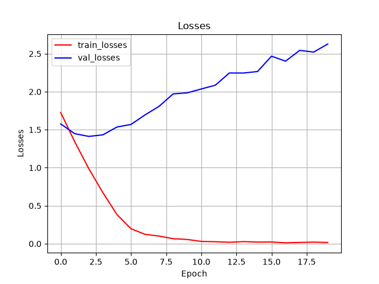
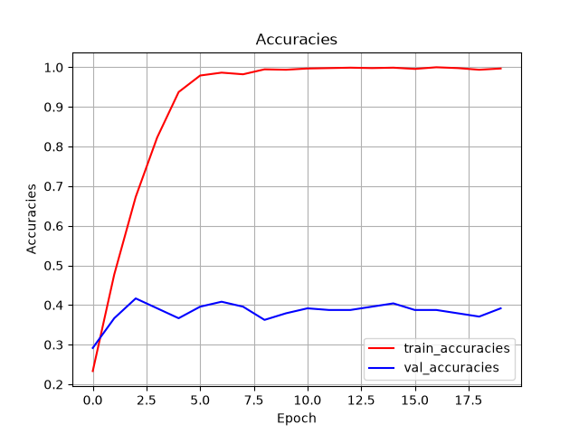
グラフの横軸は 0 から数えたエポックの番号です. 訓練データの損失 (赤) は 7 エポック目までに 0.12 まで下がり, その後も 0 の近くにとどまります. 横軸の 16 (17 エポック目) では, 訓練データの正解率が 1.0 に達しています. 一方で, テストデータの損失 (青) は横軸の 2 (3 エポック目) の 1.41 が最も低く, その後はおおむね増え続けて, 20 エポック目には 2.63 になります. テストデータの正解率も 3 エポック目の 0.417 が最も高く, その後は 0.36 から 0.41 の間で上下するだけです. 訓練データの損失が下がったまま, テストデータの損失だけが増えるのは, エポック (epoch) 数の説明で挙げた過学習の典型的な形です. 各年代 160 枚の訓練データは, ConvNeXt のパラメータの数 (約 2,800 万) と比べてはるかに少ないので, モデルは訓練データの 1 枚 1 枚に特有の特徴まで覚えて訓練データの損失を下げ, その特徴は新しい画像には通用しません.
そこで, テストデータの損失が最も低かった 3 に num_epochs を変更して, もう一度学習します (年齢識別のコード全体は 3 にしてあります). ランダムシードを固定しているので, 3 エポック目までは 20 エポックの場合と同じ値が出力されます.
Epoch 1/3
----------
train Loss: 1.7262 Acc: 0.2333
val Loss: 1.5763 Acc: 0.2917
Epoch 2/3
----------
train Loss: 1.3405 Acc: 0.4771
val Loss: 1.4478 Acc: 0.3667
Epoch 3/3
----------
train Loss: 0.9863 Acc: 0.6729
val Loss: 1.4121 Acc: 0.4167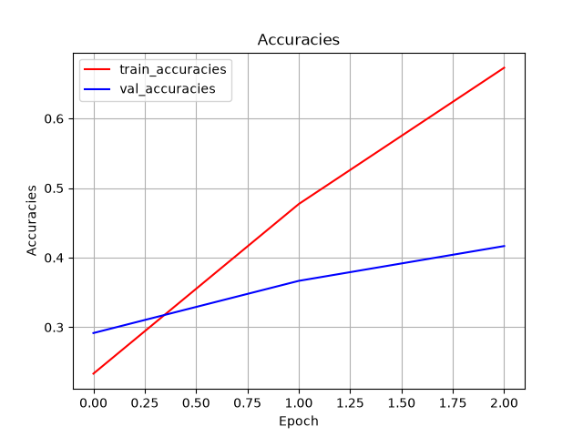
最終的に, テストデータでの正解率は 0.417 (240 枚のうち 100 枚が正解) になりました. それほど高い値ではありませんが, ランダムな予測 (1/6 \approx 0.17) の 2 倍以上なので, ここではこのモデルで先へ進みます. 実際の研究などでは, データを増やす, ハイパーパラメータやアルゴリズムを変更するなどして, より良い値を目指します. FairFace には各年代に 2,000 枚以上の画像があるので, 1 クラスあたりの枚数の上限を増やすのが最初に試せる方法です.
出力される pred_acctual_heatmap.png は, テストデータについて, 実際のラベル (横軸) ごとに, どのラベルと予測したか (縦軸) を数え, 列ごとの相対度数にしたヒートマップです. 縦と横が入れ替わっていますが, 手書き数字の認識の混同行列と同じ表です. すべて正しく予測できていれば, 度数は対角線上に集中します. 軸の番号の 0 から 5 は, 10 代から 60 代に対応します.
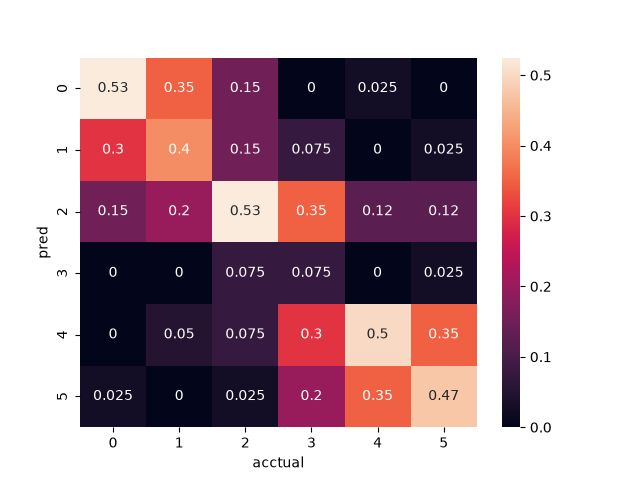
ヒートマップを見ると, 度数は対角線とその両隣に集まっています. 実際のラベルが 10 代と 20 代 (横軸の 0, 1) のとき, 50 代か 60 代と予測した割合は合わせて 0.05 以下で, 実際のラベルが 60 代 (横軸の 5) のとき, 10 代と予測した割合は 0 です. 年齢の大きく離れた年代とはほとんど取り違えていません.
誤りの多くは隣の年代との取り違えです. 実際のラベルが 10 代のときに 20 代と予測した割合は 0.3, 20 代のときに 10 代と予測した割合は 0.35 で, 50 代と 60 代の間でも 0.35 ずつ取り違えています. 最も識別できていないのは 40 代 (横軸の 3) で, 40 代と正しく予測した割合は 0.075 しかありません. 40 代の画像は, 30 代 (0.35), 50 代 (0.3), 60 代 (0.2) と予測されています. 縦軸の 3 の行を見ると, どの年代の画像も 40 代とはほとんど予測されておらず, モデルは 40 代というラベル自体をほとんど使っていません.
音声認識
音声の認識も, 画像の認識と同じ考え方で行えます. 音は空気の圧力の振動で, マイクはその圧力を 1 秒間に数千回から数万回測り, 数値の列として記録します. この数値の列を時間に沿って描いたものが波形です.
波形をそのまま入力にすると, 認識は難しくなります. 同じ言葉でも, 話す速さ, 声の高さ, 声の大きさで波形は大きく変わるからです. 手書き数字の画素の値が, 書く位置のずれで大きく変わるのと同じ事情です. そこで, パターン認識: 特徴抽出と識別の特徴抽出にあたる変換を最初に行います.
- 波形を 0.02 秒から 0.03 秒程度の短い区間に区切ります.
- 区間ごとに, どの高さ (周波数) の音がどれだけ強く含まれているかを計算します. この計算をフーリエ変換といいます.
- 区間ごとの結果を時間の順に横に並べ, 横軸が時間, 縦軸が周波数, 色がその成分の強さを表す表にします. この表をスペクトログラムといいます.
次の図は, ド (262 Hz), ミ (330 Hz), ソ (392 Hz) の音を 0.5 秒ずつ順に鳴らす音を numpy で合成し, 波形とスペクトログラムを描いたものです. Hz (ヘルツ) は 1 秒あたりの振動の回数で, 値が大きいほど高い音です.
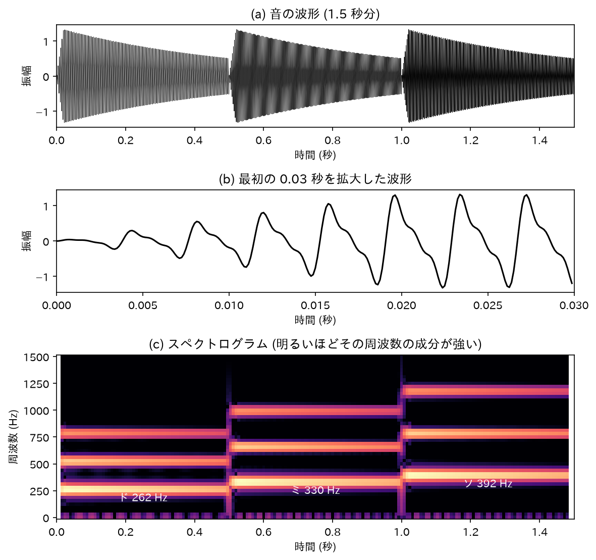
- の波形からは, 音が 0.5 秒ごとに鳴り直していることは分かりますが, 音の高さは読み取れません. (b) のように拡大すると同じ形の繰り返しが見え, その間隔が音の高さに対応しますが, 波形の形は単純な正弦波ではありません. (c) のスペクトログラムでは, 音の高さが横の帯の位置として現れ, 0.5 秒ごとに帯が上へ移っていく様子が一目で分かります. ドの区間では 262 Hz のほかに, その 2 倍 (524 Hz) と 3 倍 (786 Hz) にも帯があります. 合成するときに, 楽器の音のように 2 倍と 3 倍の周波数の成分 (倍音) を混ぜたからです. (b) の波形が複雑な形をしているのは, これらの成分が重なっているためです.
スペクトログラムは, 縦と横に数値が並んだ表なので, 1 チャンネルの画像と同じ形をしています. そのため, 画像と同じく CNN に入力して, 音声を認識できます. 話し言葉の認識では, 母音や子音の種類によって, どの周波数の帯が強くなるかが異なります. モデルは, スペクトログラムの帯の配置のパターンから, 話された音や単語を識別するように学習します. 人の聴覚に合わせて周波数の目盛りを付け直したスペクトログラム (メルスペクトログラム) がよく使われます. 最近の音声認識のモデルでは, スペクトログラムを Transformer (第8章) に入力して, 文字の並びを出力するものが主流になっています.
演習
Exercise DSP9-1
分類器を変えた手書き数字の認識
ニューラルネットワークによる識別と同じデータと分け方 (test_size=0.3, random_state=0, stratify=y) で, 次の 5 つの分類器を学習させ, テストデータでの正解率を比べてください. 最も正解率の高い分類器と低い分類器を挙げ, 低い分類器の正解率が低い理由を考えてください.
- ロジスティック回帰 (
LogisticRegression(max_iter=1000)) - 決定木 (
DecisionTreeClassifier(random_state=0), 第6章) - ランダムフォレスト (
RandomForestClassifier(random_state=0)) - サポートベクターマシン (
SVC()) - 本文の MLP (
MLPClassifier(hidden_layer_sizes=(64,), max_iter=1000, random_state=0))
提出ファイル名: dsp9-1.py
回答例
from sklearn.datasets import load_digits
from sklearn.model_selection import train_test_split
from sklearn.linear_model import LogisticRegression
from sklearn.tree import DecisionTreeClassifier
from sklearn.ensemble import RandomForestClassifier
from sklearn.svm import SVC
from sklearn.neural_network import MLPClassifier
digits = load_digits()
X = digits.data / 16
y = digits.target
X_train, X_test, y_train, y_test = train_test_split(
X, y, test_size=0.3, random_state=0, stratify=y)
models = {
'ロジスティック回帰': LogisticRegression(max_iter=1000),
'決定木': DecisionTreeClassifier(random_state=0),
'ランダムフォレスト': RandomForestClassifier(random_state=0),
'SVM': SVC(),
'MLP': MLPClassifier(hidden_layer_sizes=(64,), max_iter=1000, random_state=0),
}
for name, model in models.items():
model.fit(X_train, y_train)
print(name, round(model.score(X_test, y_test), 3))
"""
ロジスティック回帰 0.97
決定木 0.837
ランダムフォレスト 0.97
SVM 0.987
MLP 0.978
"""最も正解率が高いのは SVM (0.987), 最も低いのは決定木 (0.837) です. 決定木は, 1 回の分岐で 1 つの画素の値だけを見て「ある値以下か」を判定します. 数字の形は多くの画素の組み合わせで決まり, 同じ数字でも書く位置がずれると, 見るべき画素が変わります. 1 画素ずつの分岐を重ねる決定木は, 訓練データの書き方に合わせた分岐を覚え込みやすく, 新しい書き方の数字に通用しにくくなります. 決定木を多数組み合わせるランダムフォレストでは, この弱点が補われ, 正解率が 0.97 まで上がります.
Exercise DSP9-2
隠れ層の大きさと誤認識の傾向
本文の MLP の隠れ層のニューロンの数を 4, 8, 16, 64 と変えて学習させ (max_iter=3000, random_state=0 とします), それぞれについて次の 2 つを求めてください.
- テストデータでの正解率と, 誤認識した枚数
- 混同行列で, 誤りの多い (正解, 予測) の組の上位 3 つ
ニューロンの数によって正解率と誤りの傾向がどう変わるかを説明してください.
提出ファイル名: dsp9-2.py
回答例
import numpy as np
from sklearn.datasets import load_digits
from sklearn.model_selection import train_test_split
from sklearn.neural_network import MLPClassifier
from sklearn.metrics import confusion_matrix
digits = load_digits()
X = digits.data / 16
y = digits.target
X_train, X_test, y_train, y_test = train_test_split(
X, y, test_size=0.3, random_state=0, stratify=y)
for n in [4, 8, 16, 64]:
mlp = MLPClassifier(hidden_layer_sizes=(n,), max_iter=3000, random_state=0)
mlp.fit(X_train, y_train)
pred = mlp.predict(X_test)
cm = confusion_matrix(y_test, pred)
np.fill_diagonal(cm, 0) # 正しく分類した数を 0 にして誤りだけ残す
# 誤りの多い (正解, 予測) の組を 3 つ
top = np.dstack(np.unravel_index(np.argsort(cm, axis=None)[::-1][:3], cm.shape))[0]
pairs = [f'{a}→{b}: {cm[a, b]}' for a, b in top]
print(n, round((pred == y_test).mean(), 3), cm.sum(), pairs)
"""
4 0.935 35 ['8→9: 6', '9→3: 4', '8→1: 4']
8 0.957 23 ['2→3: 3', '8→1: 3', '4→8: 2']
16 0.972 15 ['8→1: 3', '4→1: 2', '5→8: 1']
64 0.978 12 ['8→1: 2', '6→1: 1', '3→5: 1']
"""各行は, ニューロンの数, 正解率, 誤認識した枚数, 誤りの多い組の上位 3 つです. 誤りが 1 枚ずつの組が複数あるときは, そのうちのどれが表示されるかは並べ替えの順序で決まります.
ニューロンの数を増やすほど正解率は上がり, 誤認識は 35 枚から 12 枚に減ります. 隠れ層のニューロンの数は, 取り出せる特徴の数にあたります. 4 個では 64 画素の情報を 4 つの値に押し込むことになり, 数字を見分けるのに必要な形の違いを表しきれません. 誤りの組を見ると, どの大きさでも「8」を「1」と答える誤りが上位にあり, ニューロンが 4 個のときは「8」と「9」, 「9」と「3」のように, 輪や曲線の一部を共有する数字の取り違えが目立ちます. ニューロンを増やすと, こうした形の似た数字の間の細かな違いも捉えられるようになり, 誤りが減ります.
発展
以下は授業では扱いません. 課題では, ここに挙げた手法から好きなものを選んで実施し, 最終回に発表してもらいます.
学習した特徴量の次元圧縮 (PCA と t-SNE)
年齢識別のコード全体は, 学習したモデルが訓練データの各画像について出力した値を特徴量として取り出し, PCA と t-SNE で 2 次元に圧縮した散布図も出力します (convnext_pca.png と convnext_tsne.png). PCA (主成分分析) は, データのばらつきが大きい方向から順に軸を取り直し, 上位の軸だけを残して次元を減らす手法です. t-SNE は, 高い次元で近くにある点同士が 2 次元でも近くに来るように配置する手法です.
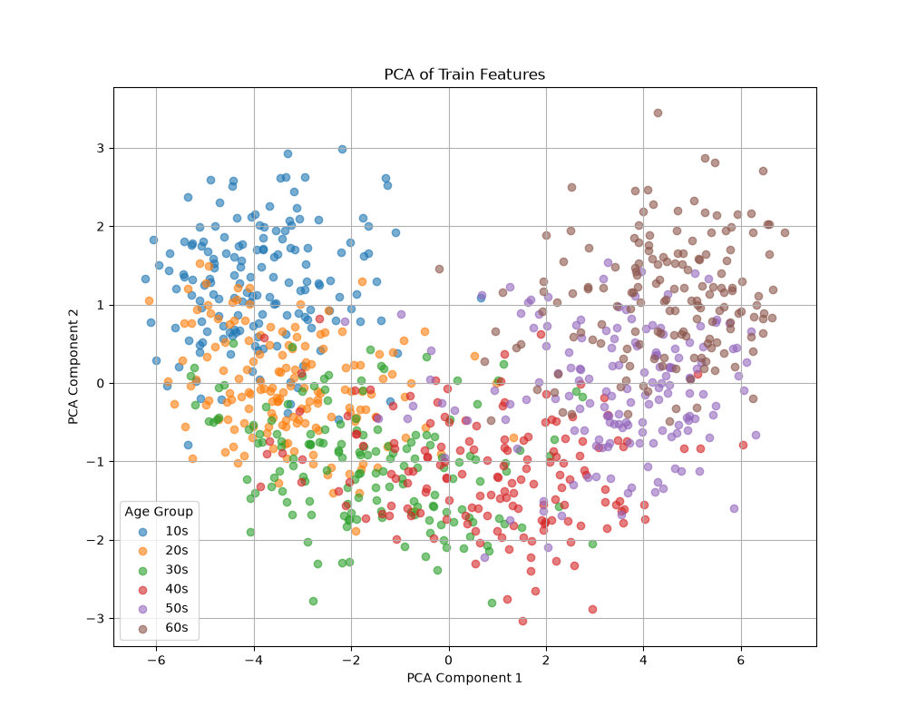
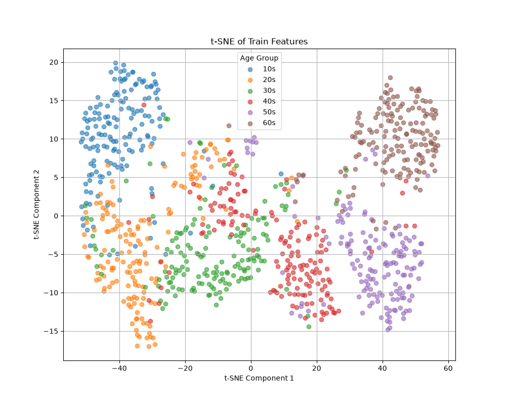
いずれの図でも, 左から右へ行くにつれて年代が高くなっており, モデルが年代をある程度識別できていることが分かります. PCA の図では, 10 代 (青) が左上に, 60 代 (茶) が右上に集まり, 20 代から 50 代はその間を U 字の形につないでいます. 20 代と 30 代, 50 代と 60 代は重なる範囲が広く, 40 代 (赤) は 30 代と 50 代の間に散らばっています. t-SNE の図では, 10 代, 50 代, 60 代がそれぞれまとまっています. 20 代, 30 代, 40 代もそれぞれの集まりを作りますが, 中央付近 (横軸の -20 から 10 のあたり) では 3 つの年代の点が入り混じっています. 30 代と 40 代の区別が難しいことは, 画像認識の実施のヒートマップで 40 代の正解の割合が低かったことと合っています.
ただし, これらの図は訓練データの特徴量から描いたものです. モデルは訓練データに合わせて学習しているので, テストデータで描くよりも年代ごとにまとまって見えます. テストデータで同じ図を描くには, val_features と val_labels を plot_tsne と plot_pca に渡します.
学習したモデルの特徴量をこのように分析すると, それぞれのクラスの特徴がある程度見えてきます.
特徴マップ
学習したモデルがどのような基準で判断しているかを説明するのは難しいのですが, いくつかの方法があります. まずは基本的な方法として, 各層でどのような特徴を取り出しているかを可視化した特徴マップを見てみましょう.
ここでは, 畳み込み層の出力を年代 (10s から 60s) ごとに可視化します. 特徴マップは, 最初の層から最終層に近づくにつれて抽象度が上がり, 解釈が難しくなります. target_layers_indices = [0,5,-1] で指定した 0 層, 5 層, 最終層 (-1) を対象にしていますが, 必要であれば可視化する層を増やしてみましょう.
次のコードは, 年齢識別のコード全体の main 関数から, 特徴マップを描く部分を抜き出したものです. 画像は次のようなフォルダ構成で保存されます.
❯ tree -d data/result
data/result
├── feature_maps
│ ├── 10s
│ │ ├── features_-1
│ │ ├── features_0
│ │ ├── features_5
│ │ └── last_conv
│ ├── 20s
│ │ ├── features_-1
│ │ ├── features_0
│ │ ├── features_5
│ │ └── last_conv
│ ├── 30s
│ │ ├── features_-1
│ │ ├── features_0
│ │ ├── features_5
│ │ └── last_conv
│ ├── 40s
│ │ ├── features_-1
│ │ ├── features_0
│ │ ├── features_5
│ │ └── last_conv
│ ├── 50s
│ │ ├── features_-1
│ │ ├── features_0
│ │ ├── features_5
│ │ └── last_conv
│ └── 60s
│ ├── features_-1
│ ├── features_0
│ ├── features_5
│ └── last_convコードは次のとおりです.
#------------------------------------------------------------------
#特徴マップの描画
#------------------------------------------------------------------
# 中間層のフックを設定する層リストの設定例
target_layers_indices = [0, 5, -1] # お好みで変更可能
# フックで取り出した特徴マップを保持する辞書
intermediate_feature_maps = {}
def get_intermediate_hook(name):
def hook_fn(m, input, output):
# output: [B, C, H, W]
intermediate_feature_maps[name] = output.detach().cpu()
return hook_fn
# 対象層にフックを登録
hooks = []
for idx in target_layers_indices:
layer_name = f"features_{idx}"
h = model.features[idx].register_forward_hook(get_intermediate_hook(layer_name))
hooks.append(h)
# --- 最後の畳み込み層のフック ---
feature_maps_last_conv = []
def get_feature_map_hook_conv(self, input, output):
feature_maps_last_conv.append(output.detach().cpu())
hook_conv = model.features[-1].register_forward_hook(get_feature_map_hook_conv)
# 抽出したいクラス (0:10s,1:20s,...,5:60s)
target_classes = [0,1,2,3,4,5]
# 各クラスから9枚ずつ取得するためのカウンタ
images_per_class = 9
extracted_counts = {cls: 0 for cls in target_classes}
# 保存ディレクトリの用意
base_dir = 'data/result/feature_maps'
if not os.path.exists(base_dir):
os.makedirs(base_dir)
# クラスごとのフォルダを作成 (10s～60s)
for cls in target_classes:
class_label_str = f"{(cls+1)*10}s"
class_dir = os.path.join(base_dir, class_label_str)
if not os.path.exists(class_dir):
os.makedirs(class_dir)
# 中間層用のサブフォルダを用意
for idx in target_layers_indices:
layer_name = f"features_{idx}"
layer_dir = os.path.join(class_dir, layer_name)
if not os.path.exists(layer_dir):
os.makedirs(layer_dir)
# 最終Conv層用のフォルダ
last_conv_dir = os.path.join(class_dir, 'last_conv')
if not os.path.exists(last_conv_dir):
os.makedirs(last_conv_dir)
model.eval()
val_iter = iter(dataloaders['val'])
with torch.no_grad():
# 全クラスが指定枚数分揃うまで繰り返す
while not all(count == images_per_class for count in extracted_counts.values()):
try:
inputs, labels = next(val_iter)
except StopIteration:
# データがなくなったら終了
break
inputs = inputs.to(device)
# フック用リストをクリア
feature_maps_last_conv.clear()
intermediate_feature_maps.clear()
# 順伝播：フックで特徴マップ取得
outputs = model(inputs)
fm_batch = feature_maps_last_conv[0] # [B, C, H, W] 最終Conv層出力
for i in range(inputs.size(0)):
cls = labels[i].item()
if cls in target_classes and extracted_counts[cls] < images_per_class:
class_label_str = f"{(cls+1)*10}s"
class_dir = os.path.join(base_dir, class_label_str)
# 中間層特徴マップ可視化
for idx in target_layers_indices:
layer_name = f"features_{idx}"
fm_intermediate = intermediate_feature_maps[layer_name][i] # shape: [C, H, W]
num_channels_to_plot = min(8, fm_intermediate.shape[0])
fig, axes = plt.subplots(2, 4, figsize=(12, 6))
axes = axes.flatten()
for ch in range(num_channels_to_plot):
ax = axes[ch]
ax.imshow(fm_intermediate[ch].numpy(), cmap='viridis')
ax.axis('off')
plt.suptitle(f'Intermediate Layer {layer_name} Feature Maps: Class {(cls+1)*10}s (Image {extracted_counts[cls]+1})')
layer_dir = os.path.join(class_dir, layer_name)
out_path = os.path.join(layer_dir, f'feature_map_{extracted_counts[cls]+1}.png')
plt.savefig(out_path)
plt.close()
# 最終Conv層特徴マップ可視化
fm = fm_batch[i] # shape: [C, H, W]
num_channels_to_plot = min(8, fm.shape[0])
fig, axes = plt.subplots(2, 4, figsize=(12, 6))
axes = axes.flatten()
for ch in range(num_channels_to_plot):
ax = axes[ch]
ax.imshow(fm[ch].numpy(), cmap='viridis')
ax.axis('off')
plt.suptitle(f'Last Conv Feature Maps: Class {(cls+1)*10}s (Image {extracted_counts[cls]+1})')
last_conv_dir = os.path.join(class_dir, 'last_conv')
out_path = os.path.join(last_conv_dir, f'feature_map_{extracted_counts[cls]+1}.png')
plt.savefig(out_path)
plt.close()
extracted_counts[cls] += 1
if all(count == images_per_class for count in extracted_counts.values()):
break
# フックを削除
hook_conv.remove()
for h in hooks:
h.remove()
print('特徴マップ描画完了')生成した画像のうち, 10 代 (10s) と 60 代 (60s) の 1 枚目 (テストデータの DataLoader から最初に取り出された画像. Grad-CAM と Guided Backpropagationで使う画像とは別のもの) の特徴マップを確認してみましょう (画像の出典: FairFace (Kärkkäinen & Joo, 2021), CC BY 4.0. 特徴マップの図は, 元の画像をモデルに入力して得た中間層の出力を描いたもので, 元の画像を加工しています).
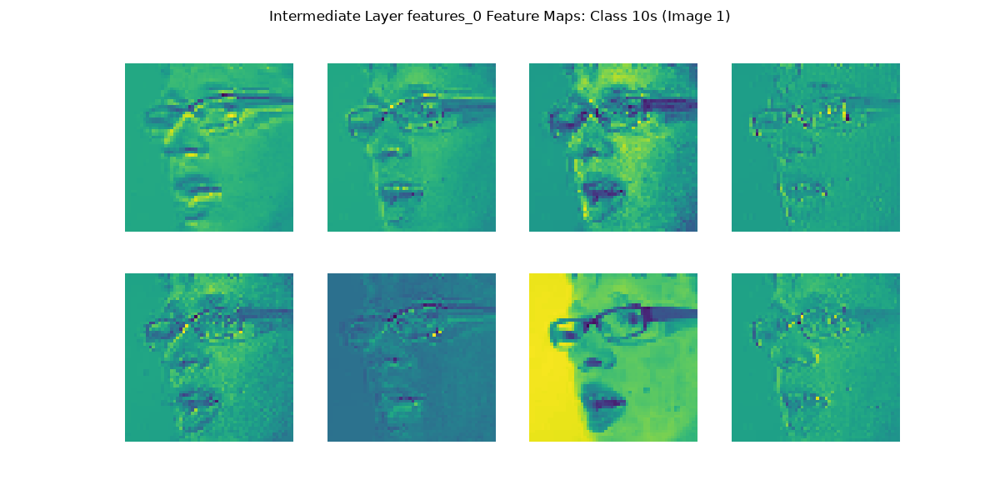
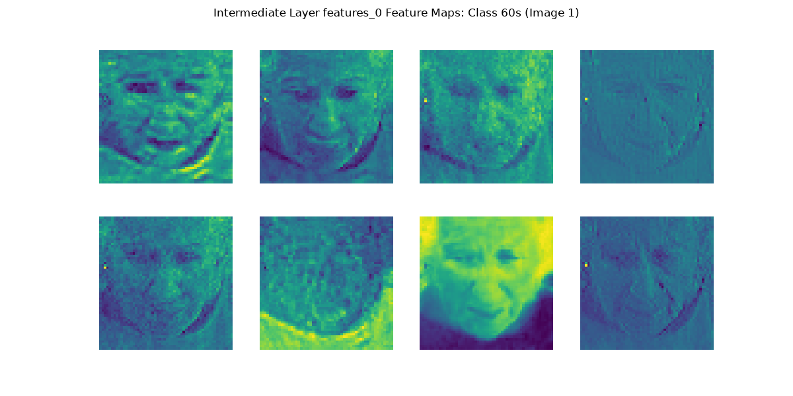
最初の層の特徴マップは抽象化が進んでおらず, 入力画像に近い形状や明暗を捉えています. 10 代の画像では眼鏡の縁や唇の輪郭, 60 代の画像では顔の輪郭や目の周りの線が, チャンネルによって明るく, あるいは暗く表れています. この段階ではまだ「顔」「目」「鼻」などのまとまった対象は捉えておらず, 画素の単位での色, 明るさ, エッジなどの低次の特徴 (輪郭や縞模様, 明るい部分や暗い部分など) を取り出している段階に見えます.
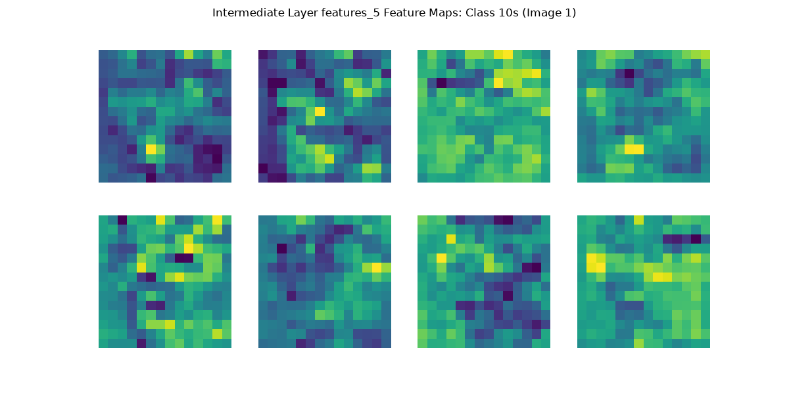
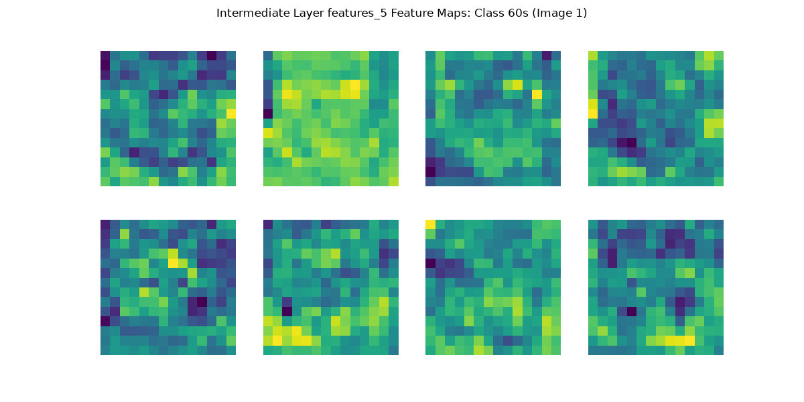
5 層の特徴マップは 14 × 14 の粗い解像度になり, 人物の顔そのものは読み取れません. モザイク状の特徴マップの中に, 一部のマスだけが明るいものがあり, 特定の領域に強く反応するフィルタがあることが分かります.
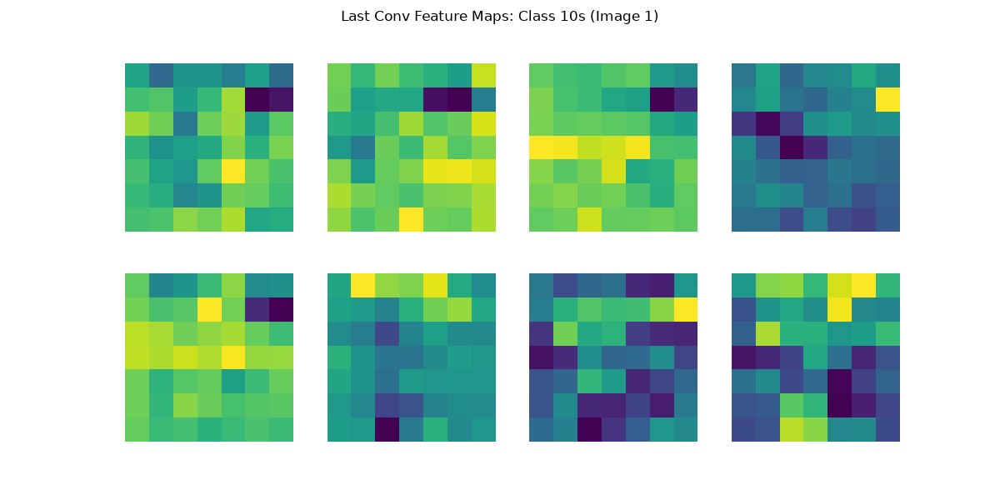
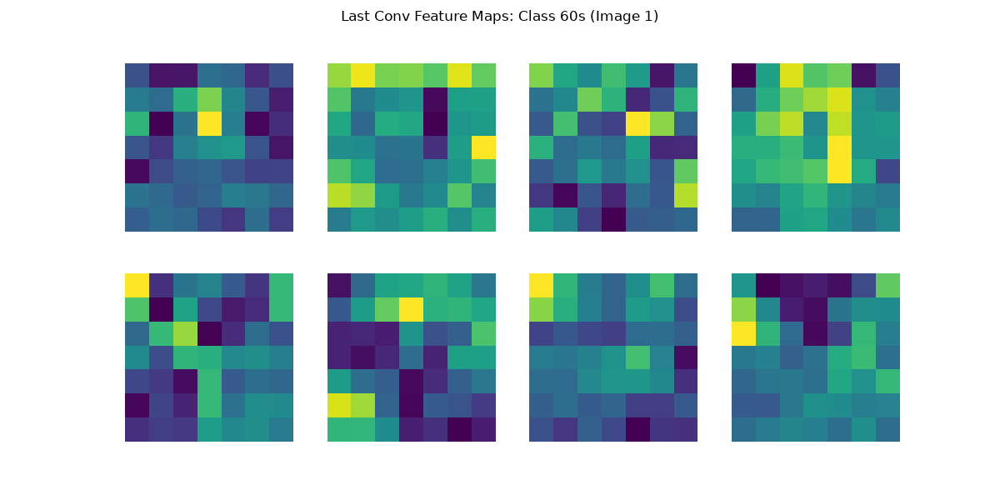
最終層の特徴マップは 7 × 7 になり, 人が見ても元の画像との対応は分からなくなります. それでも, ネットワークにとって意味のある特徴 (特定の配置や模様, 対象物のおおよその形など) がチャンネルごとに表されていると考えられます. この段階では, 分類に役立つ特徴が少数の値に凝縮されています. なお, コードの features_-1 と last_conv は, どちらも model.features[-1] の出力なので, 同じ特徴マップが保存されます.
Grad-CAM と Guided Backpropagation
特徴マップで, 学習した CNN の内部を可視化できました. しかし, 特徴マップを人が見て, CNN の判断の基準を説明するのは困難です. そこで, CNN の判断を人が説明できるように, 特徴マップの情報を元の画像の上に重ねて示す技法がいくつかあります.
Grad-CAM (Gradient-weighted Class Activation Mapping)Grad-CAM は, 予測するクラスについての勾配の情報を, CNN の中間層 (通常は最後の畳み込み層) の特徴マップに結び付けて, 画像のどの領域がクラスの識別に最も寄与しているかを可視化する手法です. 対象のクラスの得点の勾配を特徴マップまで逆伝播させてチャンネルごとの重みを求め, その重みで特徴マップを足し合わせて, 元の画像の上にクラスに特有の注目領域を示すヒートマップを作ります. ネットワークが判断の際に注目した画像の箇所が, 目で見て分かるようになります.
Guided BackpropagationGuided Backpropagation は, ネットワークの内部を逆向きに伝わる勾配を, 活性化関数 (ReLU など) を通るたびに, 入力が正の位置にある正の値だけを通すように制限して, 入力画像のどの画素が予測に大きく寄与しているかを可視化する手法です. 正の影響だけを残すので, 予測したクラスを支持する特徴に焦点を当てられます.
Guided Grad-CAMGrad-CAM と Guided Backpropagation を組み合わせた手法です. CNN が出力した予測に対して, どの画素がどの程度そのクラスの予測に貢献しているかを, より細かく可視化することを目指しています.
ここでは 10s と 60s に限定して, これらの手法を実行してみましょう. 次のコードも, 年齢識別のコード全体の main 関数から抜き出したものです (nonlocal を使っているので, 単独では動きません).
#------------------------------------------------------------------
# Grad-CAM, Guided Backprop, Guided Grad-CAM の実行 (10s, 60sに限定)
#------------------------------------------------------------------
import cv2
# 対象クラスIDとクラス名
target_cam_classes = {0:'10s', 5:'60s'}
# valデータからサンプル画像を取得
base_val_dir = os.path.join(data_dir, 'val')
sample_images = {}
for cls_id, cls_name in target_cam_classes.items():
cls_dir = os.path.join(base_val_dir, cls_name)
img_name = sorted(os.listdir(cls_dir))[0] # ファイル名の順で最初の画像
img_path = os.path.join(cls_dir, img_name)
sample_images[cls_id] = img_path
# Grad-CAM用フック設定
target_layer = model.features[-1]
features = None
gradients = None
def forward_hook(module, input, output):
nonlocal features
features = output
def backward_hook(module, grad_input, grad_output):
nonlocal gradients
gradients = grad_output[0]
forward_h = target_layer.register_forward_hook(forward_hook)
backward_h = target_layer.register_full_backward_hook(backward_hook)
# Guided Backprop用: ConvNeXtの活性化関数GELUの逆伝播を書き換える
# ReLUのGuided Backpropと同じ規則で, 入力が正の位置にある正の勾配だけを通す
gelu_inputs = {} # moduleをキーにしてforwardの入力を保存
def gelu_forward_hook(module, input, output):
gelu_inputs[module] = input[0]
def gelu_backward_hook(module, grad_input, grad_output):
# grad_output[0]: GELUの出力についての勾配 (上の層から届いた勾配)
# 返した値が, GELUの入力についての勾配として下の層へ伝わる
positive_input = (gelu_inputs[module] > 0).float() # 入力が正の位置だけ1
positive_grad = torch.clamp(grad_output[0], min=0) # 負の勾配を0にする
return (positive_grad * positive_input,)
# GELU層にフックを登録
guided_hooks = []
for m in model.modules():
if isinstance(m, nn.GELU):
fh = m.register_forward_hook(gelu_forward_hook)
bh = m.register_full_backward_hook(gelu_backward_hook)
guided_hooks.append(fh)
guided_hooks.append(bh)
def preprocess_image(img_path):
img = Image.open(img_path).convert('RGB')
img = img.resize((224, 224))
img_tensor = data_transforms['val'](img).unsqueeze(0).to(device)
return img, img_tensor
def generate_gradcam():
pooled_gradients = torch.mean(gradients, dim=[0,2,3])
cam = torch.zeros(features.shape[2:], dtype=features.dtype, device=features.device)
for i in range(features.shape[1]):
cam += pooled_gradients[i] * features[0,i,:,:]
cam = cam.cpu().data.numpy()
cam = np.maximum(cam, 0)
if np.max(cam) != 0:
cam = cam / np.max(cam)
return cam
def normalize_gradient(grad):
# 平均が0.5, 標準偏差が0.15になるように揃えて, 0〜1の範囲に収める
# (最小値と最大値で0〜1に揃えると, 少数の極端な値に合わせて全体がほぼ灰色になる)
grad = (grad - grad.mean()) / (grad.std() + 1e-8)
return np.clip(grad * 0.15 + 0.5, 0, 1)
def do_guided_backprop(model, img_tensor, target_class):
# 勾配リセット
model.zero_grad()
img_tensor.grad = None
# forward
output = model(img_tensor)
loss = output[0, target_class]
model.zero_grad()
loss.backward()
# 入力画像についての勾配 (正規化する前の値) を返す
guided_grad = img_tensor.grad.data[0].cpu().numpy().transpose(1,2,0)
return guided_grad
def apply_colormap_on_image(org_img, cam, alpha=0.5):
H_org, W_org, _ = org_img.shape
cam_resized = cv2.resize(cam, (W_org, H_org))
heatmap = cv2.applyColorMap(np.uint8(255*cam_resized), cv2.COLORMAP_JET)
heatmap = np.float32(heatmap)/255.0
org_img = np.float32(org_img)/255.0
cam_img = heatmap * alpha + org_img
cam_img = cam_img / np.max(cam_img)
return np.uint8(255*cam_img)
def guided_gradcam(guided_grad, cam):
# 正規化する前の勾配にGrad-CAMを掛けてから, 表示用に正規化する
H, W, _ = guided_grad.shape
cam_resized = cv2.resize(cam, (W, H))
guided_gradcam = guided_grad * cam_resized[..., np.newaxis]
return normalize_gradient(guided_gradcam)
gradcam_dir = 'data/result/gradcam_guided'
if not os.path.exists(gradcam_dir):
os.makedirs(gradcam_dir)
model.eval()
from PIL import Image
for cls_id, img_path in sample_images.items():
# original画像読み込み
org_img, img_tensor = preprocess_image(img_path)
org_img_np = np.array(org_img) # RGB, 224x224
img_tensor.requires_grad = True
# Grad-CAM
model.zero_grad()
output = model(img_tensor)
target_score = output[0, cls_id]
target_score.backward()
cam = generate_gradcam()
# Grad-CAM画像
org_img_cv = org_img_np[:,:,::-1].copy()
gradcam_img = apply_colormap_on_image(org_img_cv, cam)
gradcam_img_rgb = gradcam_img[:,:,::-1]
# Guided Backprop
gb = do_guided_backprop(model, img_tensor, cls_id) # 正規化前の勾配
g_gradcam = guided_gradcam(gb, cam) # 0-1 float
original_uint8 = org_img_np
gradcam_uint8 = gradcam_img_rgb
gb_uint8 = (normalize_gradient(gb)*255).astype(np.uint8)
g_gradcam_uint8 = (g_gradcam*255).astype(np.uint8)
combined = np.hstack([original_uint8, gradcam_uint8, gb_uint8, g_gradcam_uint8])
plt.imsave(os.path.join(gradcam_dir, f'class_{cls_id}_combined.png'), combined)
forward_h.remove()
backward_h.remove()
for h in guided_hooks:
h.remove()
print("Grad-CAM, Guided Backprop, Guided Grad-CAM 完了")10 代と 60 代のテストデータから, ファイル名の順で最初の画像を 1 枚ずつ選び, 年齢識別のモデルにこれらの手法を適用した結果が次のとおりです. 左から元の画像, Grad-CAM, Guided Backpropagation, Guided Grad-CAM の順に並べています. どちらの画像も, モデルは正しい年代を予測しています (6 つの年代のうち, 正しい年代の確率が最も高く, どちらも 0.48 です).
画像の出典: FairFace (Kärkkäinen & Joo, 2021), CC BY 4.0. 元の画像に Grad-CAM のヒートマップを重ねる, Guided Backpropagation の結果を掛け合わせるなどの加工をしています.
Grad-CAM を見ると, 学習したモデルは, 10 代の画像では目の周りと, 鼻の横から口にかけての頬に, 60 代の画像では額と鼻, 顎のひげに注目しています. 60 代の画像で注目している額は, しわの寄りやすい場所です. 人が年齢を推測するときにも額のしわやひげの白さを手がかりにすることがあるので, それなりに納得できる結果です. ただし, 1 枚ずつの画像から言えることは限られます. 実際の研究では, 多くの画像を比べて, モデルが何に注目しているかを分析します.
Guided Backpropagation の画像は, どちらも細かい粒状の模様が全体に広がり, 目や鼻の輪郭がかすかに分かる程度です. Guided Grad-CAM では, その模様のうち Grad-CAM が注目した領域にあるものだけが残ります.
Guided Backpropagation が何を映すかは, 輪郭のはっきりした物体の画像で確かめると分かりやすくなります. 次の図は, ImageNet で事前学習した ConvNeXt-Tiny (分類層を 6 クラス用に置き換える前のモデル) に猫とコーヒーカップの画像を入れ, モデルが予測したクラス (ImageNet のクラス番号 285 の Egyptian cat と 967 の espresso) について, 上のコードを実行した結果です. 左から元の画像, Grad-CAM, Guided Backpropagation, Guided Grad-CAM の順に並べています. 画像は scikit-image に付属するサンプル画像 (skimage.data.chelsea, skimage.data.coffee) です.
Guided Backpropagation の画像には, 猫の目, 鼻, ひげや, カップと受け皿の縁のように, 予測したクラスを支える輪郭が画素の単位で表れます. Guided Grad-CAM では, それらの輪郭のうち, Grad-CAM が注目した領域 (猫の鼻と目, カップの中) にあるものだけが残ります.
Guided Backpropagation の実装で次の 2 点を誤ると, 画像がほぼ一様な灰色になり, 画素ごとの寄与が読み取れなくなります (この資料の以前のコードにも, この 2 点の誤りがありました). 次の図は, 左から元の画像, 2 点とも誤った結果, 正規化だけを直した結果, 2 点とも直した結果です (いずれも事前学習済みのモデル).
- 負の勾配を 0 にしていない: 以前のコードは, GELU の出力が正の位置だけ勾配を通していましたが, 勾配そのものの符号は見ていませんでした. これは通常の逆伝播で ReLU を通るときと同じ計算なので, 得られる画像は通常の勾配に近いもの (相関係数は 0.7 程度) になり, 正と負の値が細かく入り混じります. Guided Backpropagation では, 入力が正の位置であることに加えて, 上の層から届いた勾配が負ならその勾配を 0 にします. 修正したコードでは,
torch.clamp(grad_output[0], min=0)で負の勾配を 0 にしています. - 最小値と最大値で正規化している: 入力画像についての勾配は, ごく少数の画素だけが極端に大きな値を取ります. 最小値と最大値で 0〜1 の範囲に揃えると, その少数の画素に合わせて目盛りが決まるので, 残りの画素はすべて中間の灰色に近い値になります. 修正したコードでは, 平均と標準偏差で揃えています (
normalize_gradient).Guided Grad-CAMも, 正規化した後の画像ではなく, 正規化する前の勾配にGrad-CAMを掛けてから正規化するように直しています.
ConvNeXt の活性化関数は ReLU ではなく GELU です. GELU は負の入力に対して 0 に近い小さな負の値を返すだけなので, ReLU の規則 (入力が正の位置にある正の勾配だけを通す) をそのまま当てはめています. GELU の本来の微分で逆伝播したうえで負の勾配を 0 にする方法でも, ほぼ同じ画像 (相関係数は 0.8 程度) になります. フックの登録には, 推奨されなくなった register_backward_hook ではなく register_full_backward_hook を使っています.
年齢識別のコード全体
顔による年齢識別からGrad-CAM と Guided Backpropagationまでのコードの全体は, 次のとおりです. 特徴マップ以降を試すたびに学習し直すのは大変なので, 2 回目以降は学習を飛ばし, 保存した重みを読み込むように分岐しています.
import os
import pandas as pd
import matplotlib.pyplot as plt
import numpy as np
import seaborn as sns
import random
# 次元削減用
from sklearn.manifold import TSNE
from sklearn.decomposition import PCA
# CNN用
import torch
import torch.nn as nn
import torch.optim as optim
from torchvision import datasets, transforms, models
from torch.utils.data import DataLoader
from torchvision.models import ConvNeXt_Tiny_Weights
#学習した特徴量を抽出する
def extract_features(model, dataloader, device):
model.eval()
features = []
labels_list = []
with torch.no_grad():
for inputs, labels in dataloader:
inputs = inputs.to(device)
labels = labels.to(device)
outputs = model(inputs)
features.append(outputs.cpu())
labels_list.append(labels.cpu())
features = torch.cat(features, dim=0)
labels = torch.cat(labels_list, dim=0)
return features, labels
# t-SNEによる次元圧縮と散布図の描画
def plot_tsne(train_features, train_labels, path):
# train_featuresとtrain_labelsをnumpyに変換
features_np = train_features.numpy()
labels_np = train_labels.numpy()
# t-SNEによる次元圧縮 (2次元)
tsne = TSNE(n_components=2, random_state=42)
features_2d = tsne.fit_transform(features_np)
# 散布図の描画
plt.figure(figsize=(10, 8))
# 各ラベルに基づいて色分けしてプロット
num_classes = len(np.unique(labels_np)) # クラス数を取得
for label in np.unique(labels_np):
indices = np.where(labels_np == label)
plt.scatter(features_2d[indices, 0]
,features_2d[indices, 1]
,label=f'{(label + 1) * 10}s'
,alpha=0.6)
plt.title('t-SNE of Train Features')
plt.xlabel('t-SNE Component 1')
plt.ylabel('t-SNE Component 2')
plt.legend(title="Age Group")
plt.grid(True)
plt.savefig(path)
plt.close()
# PCAによる次元圧縮と散布図の描画
def plot_pca(train_features, train_labels, path):
# train_featuresとtrain_labelsをnumpyに変換
features_np = train_features.numpy()
labels_np = train_labels.numpy()
# PCAによる次元圧縮 (2次元)
pca = PCA(n_components=2)
features_2d = pca.fit_transform(features_np)
# 散布図の描画
plt.figure(figsize=(10, 8))
# 各ラベルに基づいて色分けしてプロット
num_classes = len(np.unique(labels_np)) # クラス数を取得
for label in np.unique(labels_np):
indices = np.where(labels_np == label)
plt.scatter(features_2d[indices, 0]
,features_2d[indices, 1]
,label=f'{(label + 1) * 10}s'
,alpha=0.6)
plt.title('PCA of Train Features')
plt.xlabel('PCA Component 1')
plt.ylabel('PCA Component 2')
plt.legend(title="Age Group")
plt.grid(True)
plt.savefig(path)
plt.close()
# 乱数シードを設定
def set_seed(seed):
torch.manual_seed(seed)
np.random.seed(seed) # Numpy用の乱数シードを設定
random.seed(seed) # Pythonの標準乱数シードを設定
# 再現性を完全に保証するために以下も設定（ただし、若干のパフォーマンス低下の可能性あり）
torch.backends.cudnn.deterministic = True
torch.backends.cudnn.benchmark = False
def main():
# シードを設定する
#(自分の研究でやる場合は以下の行は消しても問題ない.)
set_seed(2024)
# データのディレクトリ設定
data_dir = 'data/sorted_images_split'
# 結果の保存先のフォルダを作る
os.makedirs('data/result', exist_ok=True)
batch_size = 32
num_epochs = 3
num_classes = 6 # 10代, 20代, ..., 60代
# デバイス設定
#GPUが利用できる場合はGPUを使う,そうでない場合はCPUを計算に利用します.
if torch.backends.mps.is_available():
device = torch.device("mps") #Mac GPU
elif torch.cuda.is_available():
device = torch.device("cuda:0") #Win GPU
else:
device = torch.device("cpu") #CPU
print(f'Using device: {device}')
# モデル定義
# ConvNextモデルの読み込みとカスタマイズ
weights = ConvNeXt_Tiny_Weights.IMAGENET1K_V1 # 最新の重みを指定
model = models.convnext_tiny(weights=weights) # ConvNextの小さいモデルを使用
#モデル分類層の最終層(第3層(0,1,2番目))の入力特徴量を取得
num_ftrs = model.classifier[2].in_features
#既に学習されたモデルではクラス数がことなるので ,入力特徴量の数(num_ftrs)はそのまま
#出力をクラス数に変更
model.classifier[2] = nn.Linear(num_ftrs, num_classes)
model = model.to(device)
# データ変換（前処理）
data_transforms = {
'train': transforms.Compose([
transforms.Resize((224, 224)), #画像のリサイズ
transforms.RandomHorizontalFlip(), #画像をランダムに反転
transforms.ColorJitter(brightness=0.2, contrast=0.2), # 色調変化
transforms.ToTensor(), #テンソル(多次元配列)に変換
transforms.Normalize(mean=[0.485, 0.456, 0.406]
,std=[0.229, 0.224, 0.225]), #正規化(本来は値を変更する必要あり.
]),
'val': transforms.Compose([
transforms.Resize((224, 224)),
transforms.ToTensor(),
transforms.Normalize([0.485, 0.456, 0.406]
,[0.229, 0.224, 0.225]),
]),
}
# データセットの読み込み
image_datasets = {x: datasets.ImageFolder(os.path.join(data_dir, x),
data_transforms[x])
for x in ['train', 'val']}
dataloaders = {x: DataLoader(image_datasets[x]
,batch_size=batch_size
,shuffle=True
,num_workers=4) #使用するCore数
for x in ['train', 'val']}
# 毎回学習するの大変なので,学習済みの場合は結果を読み込む
if os.path.exists('data/result/trained_model_weights.pth'):
print("学習済みデータのロード中")
model.load_state_dict(torch.load('data/result/trained_model_weights.pth', map_location=device))
else:
print("学習開始")
# 損失関数とオプティマイザ
criterion = nn.CrossEntropyLoss() #クロスエントロピー損失
optimizer = optim.Adam(model.parameters() #Adam
,lr=0.0001) #Learning rate (学習率)
#SGDを利用する場合
#optimizer = optim.SGD(model.parameters(), lr=0.001, momentum=0.9)
#結果の記録用
train_losses = []
train_accuracies = []
val_losses = []
val_accuracies = []
results = []
# 学習ループ
for epoch in range(num_epochs):
print(f'Epoch {epoch+1}/{num_epochs}')
print('-' * 10)
for phase in ['train', 'val']:
if phase == 'train':
model.train()
else:
model.eval()
running_loss = 0.0
running_corrects = 0
for inputs, labels in dataloaders[phase]:
inputs = inputs.to(device)
labels = labels.to(device)
optimizer.zero_grad()
with torch.set_grad_enabled(phase == 'train'):
outputs = model(inputs)
_, preds = torch.max(outputs, 1)
loss = criterion(outputs, labels)
if phase == 'train':
loss.backward()
optimizer.step()
running_loss += loss.item() * inputs.size(0)
running_corrects += torch.sum(preds == labels.data)
if phase == 'val': # バリデーション時に予測と実際のラベルを保存
for i in range(len(labels)):
results.append({
'epoch': epoch + 1,
'pred': preds[i].item(),
'acctual': labels[i].item()
})
epoch_loss = running_loss / len(image_datasets[phase])
epoch_acc = running_corrects.float() / len(image_datasets[phase])
print(f'{phase} Loss: {epoch_loss:.4f} Acc: {epoch_acc:.4f}')
if phase == 'train':
train_losses.append(epoch_loss)
train_accuracies.append(epoch_acc.item())
else:
val_losses.append(epoch_loss)
val_accuracies.append(epoch_acc.item())
#------------------------------------------------------------------
#結果の表示
#------------------------------------------------------------------
print('Training complete')
print("Training Losses: ", train_losses)
print("Training Accuracies: ", train_accuracies)
print("Validation Losses: ", val_losses)
print("Validation Accuracies: ", val_accuracies)
# 結果を可視化してCSVファイルに保存
loss_acc = pd.DataFrame({'train_losses':train_losses
,'train_accuracies':train_accuracies
,'val_losses':val_losses
,'val_accuracies':val_accuracies})
plt.title('Losses')
plt.xlabel('Epoch')
plt.ylabel('Losses')
plt.plot(np.arange(num_epochs),loss_acc['train_losses'],c='r',label='train_losses')
plt.plot(np.arange(num_epochs),loss_acc['val_losses'],c='b',label='val_losses')
plt.grid(True)
plt.legend()
plt.savefig('data/result/convnext_loss.png')
plt.close()
plt.title('Accuracies')
plt.xlabel('Epoch')
plt.ylabel('Accuracies')
plt.plot(np.arange(num_epochs),loss_acc['train_accuracies'],c='r',label='train_accuracies')
plt.plot(np.arange(num_epochs),loss_acc['val_accuracies'],c='b',label='val_accuracies')
plt.grid(True)
plt.legend()
plt.savefig('data/result/convnext_acc.png')
plt.close()
loss_acc.to_csv('data/result/convnext_loss_acc.csv'
,encoding='utf_8_sig')
results_df = pd.DataFrame(results)
result_max_epochs = results_df[results_df['epoch'] == num_epochs]
result_heatmap = pd.DataFrame(index=np.arange(6)
,columns=np.arange(6)
,data=0)
#実際のラベルに対する予測された回数をカウント
for i in result_max_epochs.index:
p = result_max_epochs.at[i,'pred']
a = result_max_epochs.at[i,'acctual']
result_heatmap.at[p,a] +=1
#列相対度数に変換
for c in result_heatmap:
result_heatmap[c] = result_heatmap[c] / result_heatmap[c].sum()
#ヒートマップとして表現
sns.heatmap(result_heatmap
,annot=True)
plt.ylabel('pred')
plt.xlabel('acctual')
plt.savefig('data/result/pred_acctual_heatmap.png')
plt.close()
results_df.to_csv('data/result/pred_acctual.csv'
,encoding='utf_8_sig')
# 特徴量を取得する
train_features, train_labels = extract_features(model, dataloaders['train'], device)
val_features, val_labels = extract_features(model, dataloaders['val'], device)
#散布図の描画
plot_tsne(train_features, train_labels,'data/result/convnext_tsne.png')
plot_pca(train_features, train_labels,'data/result/convnext_pca.png')
# (毎回学習するのは大変なので)特徴量を表示または保存しておく
torch.save(model.state_dict(), 'data/result/trained_model_weights.pth')
#------------------------------------------------------------------
#特徴マップの描画
#------------------------------------------------------------------
# 中間層のフックを設定する層リストの設定例
target_layers_indices = [0, 5, -1] # お好みで変更可能
# フックで取り出した特徴マップを保持する辞書
intermediate_feature_maps = {}
def get_intermediate_hook(name):
def hook_fn(m, input, output):
# output: [B, C, H, W]
intermediate_feature_maps[name] = output.detach().cpu()
return hook_fn
# 対象層にフックを登録
hooks = []
for idx in target_layers_indices:
layer_name = f"features_{idx}"
h = model.features[idx].register_forward_hook(get_intermediate_hook(layer_name))
hooks.append(h)
# --- 最後の畳み込み層のフック ---
feature_maps_last_conv = []
def get_feature_map_hook_conv(self, input, output):
feature_maps_last_conv.append(output.detach().cpu())
hook_conv = model.features[-1].register_forward_hook(get_feature_map_hook_conv)
# 抽出したいクラス (0:10s,1:20s,...,5:60s)
target_classes = [0,1,2,3,4,5]
# 各クラスから9枚ずつ取得するためのカウンタ
images_per_class = 9
extracted_counts = {cls: 0 for cls in target_classes}
# 保存ディレクトリの用意
base_dir = 'data/result/feature_maps'
if not os.path.exists(base_dir):
os.makedirs(base_dir)
# クラスごとのフォルダを作成 (10s～60s)
for cls in target_classes:
class_label_str = f"{(cls+1)*10}s"
class_dir = os.path.join(base_dir, class_label_str)
if not os.path.exists(class_dir):
os.makedirs(class_dir)
# 中間層用のサブフォルダを用意
for idx in target_layers_indices:
layer_name = f"features_{idx}"
layer_dir = os.path.join(class_dir, layer_name)
if not os.path.exists(layer_dir):
os.makedirs(layer_dir)
# 最終Conv層用のフォルダ
last_conv_dir = os.path.join(class_dir, 'last_conv')
if not os.path.exists(last_conv_dir):
os.makedirs(last_conv_dir)
model.eval()
val_iter = iter(dataloaders['val'])
with torch.no_grad():
# 全クラスが指定枚数分揃うまで繰り返す
while not all(count == images_per_class for count in extracted_counts.values()):
try:
inputs, labels = next(val_iter)
except StopIteration:
# データがなくなったら終了
break
inputs = inputs.to(device)
# フック用リストをクリア
feature_maps_last_conv.clear()
intermediate_feature_maps.clear()
# 順伝播：フックで特徴マップ取得
outputs = model(inputs)
fm_batch = feature_maps_last_conv[0] # [B, C, H, W] 最終Conv層出力
for i in range(inputs.size(0)):
cls = labels[i].item()
if cls in target_classes and extracted_counts[cls] < images_per_class:
class_label_str = f"{(cls+1)*10}s"
class_dir = os.path.join(base_dir, class_label_str)
# 中間層特徴マップ可視化
for idx in target_layers_indices:
layer_name = f"features_{idx}"
fm_intermediate = intermediate_feature_maps[layer_name][i] # shape: [C, H, W]
num_channels_to_plot = min(8, fm_intermediate.shape[0])
fig, axes = plt.subplots(2, 4, figsize=(12, 6))
axes = axes.flatten()
for ch in range(num_channels_to_plot):
ax = axes[ch]
ax.imshow(fm_intermediate[ch].numpy(), cmap='viridis')
ax.axis('off')
plt.suptitle(f'Intermediate Layer {layer_name} Feature Maps: Class {(cls+1)*10}s (Image {extracted_counts[cls]+1})')
layer_dir = os.path.join(class_dir, layer_name)
out_path = os.path.join(layer_dir, f'feature_map_{extracted_counts[cls]+1}.png')
plt.savefig(out_path)
plt.close()
# 最終Conv層特徴マップ可視化
fm = fm_batch[i] # shape: [C, H, W]
num_channels_to_plot = min(8, fm.shape[0])
fig, axes = plt.subplots(2, 4, figsize=(12, 6))
axes = axes.flatten()
for ch in range(num_channels_to_plot):
ax = axes[ch]
ax.imshow(fm[ch].numpy(), cmap='viridis')
ax.axis('off')
plt.suptitle(f'Last Conv Feature Maps: Class {(cls+1)*10}s (Image {extracted_counts[cls]+1})')
last_conv_dir = os.path.join(class_dir, 'last_conv')
out_path = os.path.join(last_conv_dir, f'feature_map_{extracted_counts[cls]+1}.png')
plt.savefig(out_path)
plt.close()
extracted_counts[cls] += 1
if all(count == images_per_class for count in extracted_counts.values()):
break
# フックを削除
hook_conv.remove()
for h in hooks:
h.remove()
print('特徴マップ描画完了')
#------------------------------------------------------------------
# Grad-CAM, Guided Backprop, Guided Grad-CAM の実行 (10s, 60sに限定)
#------------------------------------------------------------------
import cv2
# 対象クラスIDとクラス名
target_cam_classes = {0:'10s', 5:'60s'}
# valデータからサンプル画像を取得
base_val_dir = os.path.join(data_dir, 'val')
sample_images = {}
for cls_id, cls_name in target_cam_classes.items():
cls_dir = os.path.join(base_val_dir, cls_name)
img_name = sorted(os.listdir(cls_dir))[0] # ファイル名の順で最初の画像
img_path = os.path.join(cls_dir, img_name)
sample_images[cls_id] = img_path
# Grad-CAM用フック設定
target_layer = model.features[-1]
features = None
gradients = None
def forward_hook(module, input, output):
nonlocal features
features = output
def backward_hook(module, grad_input, grad_output):
nonlocal gradients
gradients = grad_output[0]
forward_h = target_layer.register_forward_hook(forward_hook)
backward_h = target_layer.register_full_backward_hook(backward_hook)
# Guided Backprop用: ConvNeXtの活性化関数GELUの逆伝播を書き換える
# ReLUのGuided Backpropと同じ規則で, 入力が正の位置にある正の勾配だけを通す
gelu_inputs = {} # moduleをキーにしてforwardの入力を保存
def gelu_forward_hook(module, input, output):
gelu_inputs[module] = input[0]
def gelu_backward_hook(module, grad_input, grad_output):
# grad_output[0]: GELUの出力についての勾配 (上の層から届いた勾配)
# 返した値が, GELUの入力についての勾配として下の層へ伝わる
positive_input = (gelu_inputs[module] > 0).float() # 入力が正の位置だけ1
positive_grad = torch.clamp(grad_output[0], min=0) # 負の勾配を0にする
return (positive_grad * positive_input,)
# GELU層にフックを登録
guided_hooks = []
for m in model.modules():
if isinstance(m, nn.GELU):
fh = m.register_forward_hook(gelu_forward_hook)
bh = m.register_full_backward_hook(gelu_backward_hook)
guided_hooks.append(fh)
guided_hooks.append(bh)
def preprocess_image(img_path):
img = Image.open(img_path).convert('RGB')
img = img.resize((224, 224))
img_tensor = data_transforms['val'](img).unsqueeze(0).to(device)
return img, img_tensor
def generate_gradcam():
pooled_gradients = torch.mean(gradients, dim=[0,2,3])
cam = torch.zeros(features.shape[2:], dtype=features.dtype, device=features.device)
for i in range(features.shape[1]):
cam += pooled_gradients[i] * features[0,i,:,:]
cam = cam.cpu().data.numpy()
cam = np.maximum(cam, 0)
if np.max(cam) != 0:
cam = cam / np.max(cam)
return cam
def normalize_gradient(grad):
# 平均が0.5, 標準偏差が0.15になるように揃えて, 0〜1の範囲に収める
# (最小値と最大値で0〜1に揃えると, 少数の極端な値に合わせて全体がほぼ灰色になる)
grad = (grad - grad.mean()) / (grad.std() + 1e-8)
return np.clip(grad * 0.15 + 0.5, 0, 1)
def do_guided_backprop(model, img_tensor, target_class):
# 勾配リセット
model.zero_grad()
img_tensor.grad = None
# forward
output = model(img_tensor)
loss = output[0, target_class]
model.zero_grad()
loss.backward()
# 入力画像についての勾配 (正規化する前の値) を返す
guided_grad = img_tensor.grad.data[0].cpu().numpy().transpose(1,2,0)
return guided_grad
def apply_colormap_on_image(org_img, cam, alpha=0.5):
H_org, W_org, _ = org_img.shape
cam_resized = cv2.resize(cam, (W_org, H_org))
heatmap = cv2.applyColorMap(np.uint8(255*cam_resized), cv2.COLORMAP_JET)
heatmap = np.float32(heatmap)/255.0
org_img = np.float32(org_img)/255.0
cam_img = heatmap * alpha + org_img
cam_img = cam_img / np.max(cam_img)
return np.uint8(255*cam_img)
def guided_gradcam(guided_grad, cam):
# 正規化する前の勾配にGrad-CAMを掛けてから, 表示用に正規化する
H, W, _ = guided_grad.shape
cam_resized = cv2.resize(cam, (W, H))
guided_gradcam = guided_grad * cam_resized[..., np.newaxis]
return normalize_gradient(guided_gradcam)
gradcam_dir = 'data/result/gradcam_guided'
if not os.path.exists(gradcam_dir):
os.makedirs(gradcam_dir)
model.eval()
from PIL import Image
for cls_id, img_path in sample_images.items():
# original画像読み込み
org_img, img_tensor = preprocess_image(img_path)
org_img_np = np.array(org_img) # RGB, 224x224
img_tensor.requires_grad = True
# Grad-CAM
model.zero_grad()
output = model(img_tensor)
target_score = output[0, cls_id]
target_score.backward()
cam = generate_gradcam()
# Grad-CAM画像
org_img_cv = org_img_np[:,:,::-1].copy()
gradcam_img = apply_colormap_on_image(org_img_cv, cam)
gradcam_img_rgb = gradcam_img[:,:,::-1]
# Guided Backprop
gb = do_guided_backprop(model, img_tensor, cls_id) # 正規化前の勾配
g_gradcam = guided_gradcam(gb, cam) # 0-1 float
original_uint8 = org_img_np
gradcam_uint8 = gradcam_img_rgb
gb_uint8 = (normalize_gradient(gb)*255).astype(np.uint8)
g_gradcam_uint8 = (g_gradcam*255).astype(np.uint8)
combined = np.hstack([original_uint8, gradcam_uint8, gb_uint8, g_gradcam_uint8])
plt.imsave(os.path.join(gradcam_dir, f'class_{cls_id}_combined.png'), combined)
forward_h.remove()
backward_h.remove()
for h in guided_hooks:
h.remove()
print("Grad-CAM, Guided Backprop, Guided Grad-CAM 完了")
#------------------------------------------------------------------
#スクリプトとして実行された場合(python convnext.py)で実行された場合に,
# if __name__ == '__main__': 以下のみが実行される.
# 並列処理(multiprocessing)を行う場合にこのようにしないと,
# 各処理ですべて同じコードが実行されるため,無限ループなどが起きる.
if __name__ == '__main__':
main()Vision Transformer
Vision Transformer (ViT) は, 第8章の Transformer を画像の認識に使うモデルです (2020 年). 文章をトークンの並びとして扱ったのと同じように, 画像を小さな正方形の区画 (パッチ) の並びとして扱います.
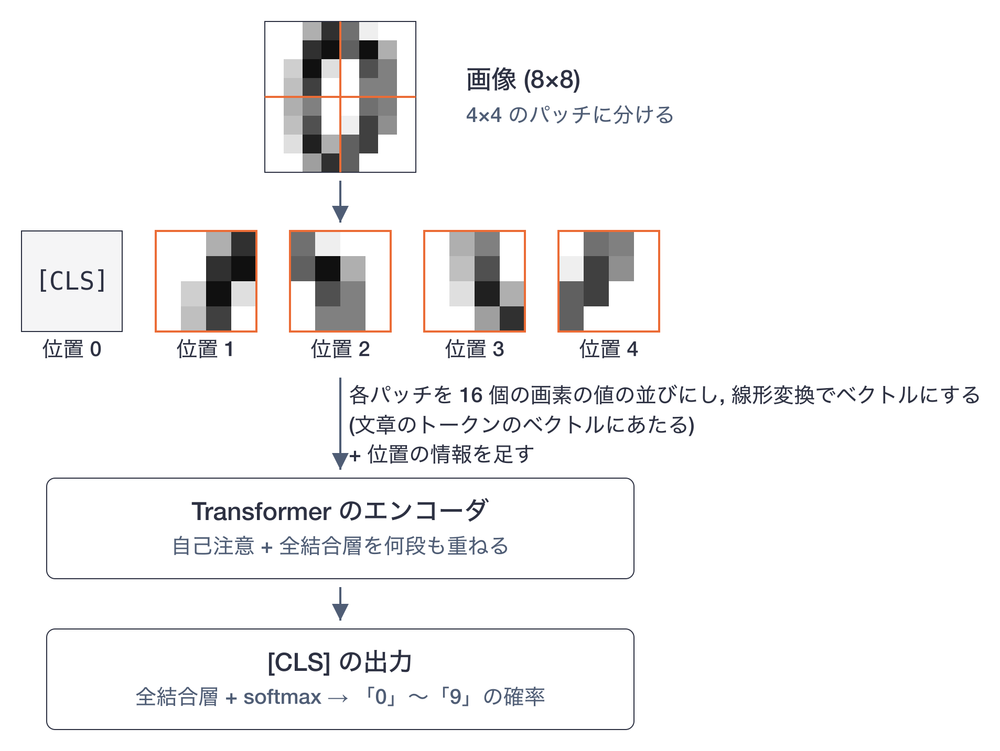
図は, 手書き数字の「0」の画像 (8 × 8 画素) を例に, ViT の処理の流れを描いたものです.
- 画像をパッチに分けます. 図では 4 × 4 画素のパッチ 4 つに分けています. もとの ViT では, 224 × 224 画素の画像を 16 × 16 画素のパッチに分けるので, パッチは 14 \times 14 = 196 個になります.
- 各パッチの画素の値を 1 列に並べ (図では 16 個の値), 学習で決まる行列を掛けてベクトルにします. このベクトルが, 「猫が鳴く」の各トークンのベクトル (第8章) にあたります. 画像はパッチの並びという「文」になり, 各パッチが「単語」の役割をします.
- 先頭に, 分類のための特別なトークン
[CLS]を加えます.[CLS]のベクトルも学習で決まります. - 各ベクトルに, 何番目のパッチかを表す位置の情報を足します. 自己注意の計算には並び順が入らないので, 位置の情報がないと, パッチの配置を入れ替えた画像と区別できません. 文章で「猫が鳴く」と「鳴くが猫」を区別するために位置エンコーディングを足したのと同じ理由です.
- Transformer のエンコーダ (自己注意と全結合層の組) を何段も重ねて通します. 各段の自己注意で, 各パッチのベクトルは, すべてのパッチのベクトルを注意の重みで足し合わせたものに更新されます.
- 最後の段の
[CLS]のベクトルを全結合層と softmax 関数に通し, 各クラスの確率を出します.[CLS]は, 自己注意を通してすべてのパッチから情報を集めるので, 画像全体を要約したベクトルになります.
CNN と ViT の違いは, 1 つの層で参照する範囲にあります. CNN の畳み込み層は, フィルタの大きさの範囲 (3 \times 3 など) の近くの画素だけを見て, 層を重ねるごとに参照する範囲を少しずつ広げます. ViT の自己注意は, 最初の層から, 画像の離れた位置にあるパッチ同士の関係も直接扱えます. 例えば顔の画像なら, 目のパッチと口のパッチの関係を 1 段目から計算できます.
その反面, ViT には「近くの画素ほど関係が深い」という画像の性質が, 仕組みとして組み込まれていません. この性質も学習で身に付ける必要があるので, CNN よりも多くの訓練データが必要になります. もとの ViT は, 1000 万枚を超える規模の画像で事前学習したときに, CNN と同等以上の精度に達しました. 代表的な CNN モデルの表にある ConvNeXt は, 逆に ViT の工夫を CNN に取り入れて, CNN でも同等の精度を出せることを示したモデルです.
ViT では, [CLS] から各パッチへの注意の重みを画像の上に重ねて表示すると, モデルが画像のどの部分に注目したかを可視化できます. Grad-CAM と Guided Backpropagationと同じく, モデルの判断の根拠を調べる手がかりになります.